|
||||||||||||||||||||
|
19 février 2013 - Apa'e Fenua Enata 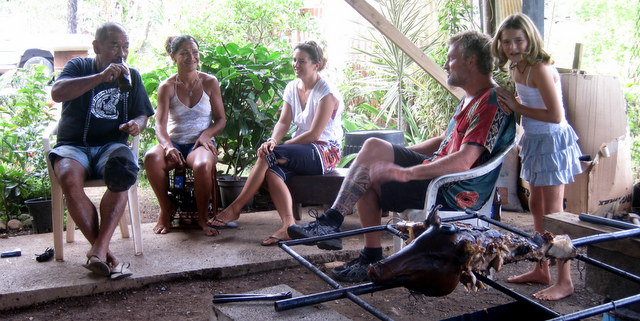 Dernier cochon grillé marquisien Au terme d'un ultime BBQ chez Mapuhi et d'un dernier poisson cru chez Riton, nous avons mis les voiles en direction de Hilo, notre point d'arrivée prévu à Hawaii, non sans avoir salué au passage nos nouveaux mais éphémères amis bretons sur Camini. Nous ne manquerons pas de les visiter lors de notre prochain passage en France. |
||||||||||||||||||||
|
9 février 2013 - Lagoon 620 D'ordinaire, je me pavane sur mon gros cata de bourge en snobant les monocoques, particulièrement les moins de 10m, qui me le rendent d'ailleurs bien. C'est simple, à Atuona, je fais la loi, tout le monde respecte l'homme au grand cata rouge et blanc, orné d'un tiki, et qui revient de Nlle Zélande, et qui a la jambe et l'épaule tatouées, et qui se la pète à donf.
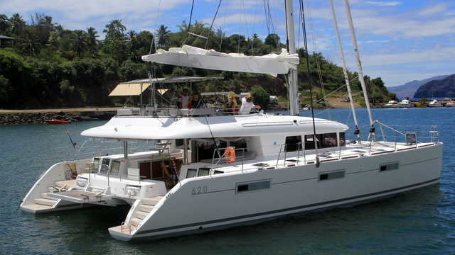 Le lagoon dispose d'un magnifique fly-bridge Mais cette nuit, tout a changé. Un Lagoon 620 flambant neuf est venu jeter l'ancre dans notre jardin. 62 pieds de technologie lourde, dans tous les sens du mot, sont venus troubler l'ordre établi. Finie l'ostentation, bienvenue l'humilité.
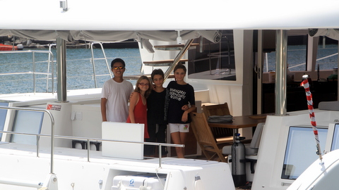 Les enfants adorent le côté hi-tech "If you can't beat them, join them", dit l'adage. On a donc fait copain-copain avec les nouveaux venus qui sont... Belges! Eh oui, notre projet de confédération Belgo-Marquisienne prend forme. Ils convoient le navire jusqu'aux Philippines et nous ont gentiment invités à bord, ce que nous avons accepté sans hésiter. Après avoir expliqué qu'ils ne pouvaient rester trop longtemps, sous peine de ternir ma réputation, nous avons entamé une visite des lieux. En fait, c'est tout pareil que chez nous, mais en plus grand. Je dois dire que, par moment, nous avons oublié que nous étions à bord d'un voilier tellement les espaces sont volumineux. C'est vraiment impressionnant. Autre réelle différence, tout est high-tech: écran plat escamotable, contrôle du navire par écran tactile, fly-bridge équipé de deux barres à roue, groupe électrogène suffisant pour alimenter une petite ville... C'est vraiment un autre monde. Enfin, il paraît qu'en navigation, ça "tape", exactement comme sur les 38 pieds, eh eh eh.
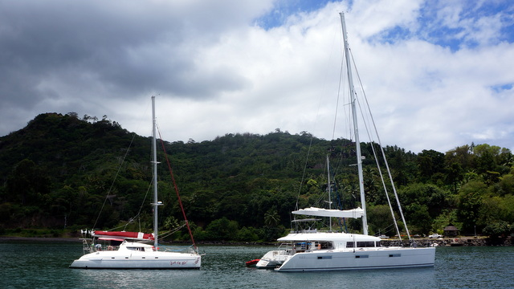 C'est fou ce que les photos raccourcissent les distances...Let It Be fait quand même 46 pieds. |
||||||||||||||||||||
|
7 février 2013 - Le BBQ, une activité d'homme Lorsque nous avons quitté la Martinique, il y a près de 4 ans, mon dieu que le temps passe vite, nous avions un BBQ au charbon. Malgré ses suppliques, j'avais formellement interdit à Cécile de s'approcher de cet engin réservé exclusivement à la gent masculine, à l'image du rasoir.
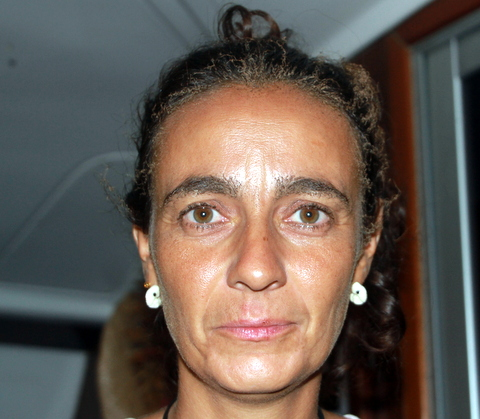 Cécile grillée Ayant surpris Cécile avec mon rasoir, j'ai compris que mes interdits n'étaient guère respectés sur ce bateau. J'ai donc fait l'acquisition d'un BBQ au gaz en Nlle Zélande, conscient que, tôt ou tard, Cécile s'arrogerait le droit invraisemblable d'y faire cuire des saucisses. De fait, depuis quelques mois, ce ne sont pas que des saucisses mais également des filets poissons, des entrecôtes, des cuisses de poulet qui ont grésillé sous les doigts experts de ma douce moitié.
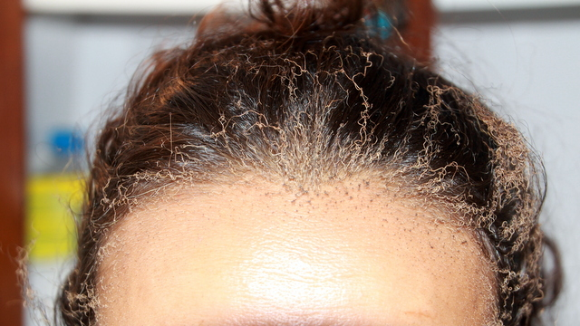 Vous sentez ? Hélas, il ne faut pas trop s'éloigner des recommandations d'Eric... Ayant mal fixé le tuyau d'arrivée de gaz, une mesquine petite fuite au niveau de la jonction a généré une accumulation invisible qui s'est enflammée, en même temps que Cécile, lors de l'allumage du BBQ. Maintenant, Cécile sait non seulement pourquoi les BBQ sont manipulés par les hommes mais elle sait aussi qu'une épilation au chalumeau n'est pas plus efficace et bien plus malodorante qu'à la pince... |
||||||||||||||||||||
|
31 janvier 2013 - Les sculpteurs sur os d'Hapatoni Depuis quelques semaines, nous avons fusionné avec les Camini, nos nouveaux amis bretons. On ne se quitte plus. Nico, Marie, Juliette (5 ans) et Titouan (3 ans) font pratiquement partie de la famille. Partis ensemble de Nuku Hiva, nous nous sommes retrouvés à Tahuata après une nuit de navigation marquée par un gros grain bien poisseux au large d'Hiva Oa.
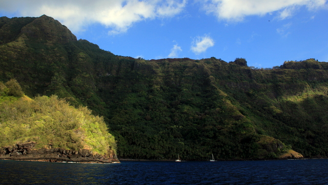 Le mouillage d'Hapatoni est impressionnant Arrivés à Tahuata, réputée pour ses plages de sable blanc (jaunâtre, à vrai dire) uniques aux Marquises, nous avons directement pris la direction de la plage où se fracassait bruyamment une longue houle. C'est bien simple, il nous fut impossible d'y accéder en dinghy, on a ancré l'annexe avant de terminer à la nage, en espérant passer entre deux rouleaux... A ce petit jeu, les plus adroits furent Nico et Marie qui devaient non seulement attendre le bon moment pour plonger mais, en outre, assurer le bon convoyage de leur progéniture dans les flôts tumultueux.
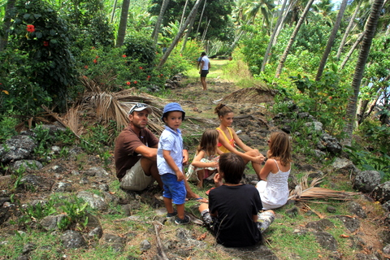 Les Camini et les Let It Bi en promenade Pendant que les enfants jouaient dans les vagues, Nico et moi sommes partis dépoissonner le récif. On s'est d'abord essayé au harpon, sans plus de chance l'un que l'autre. Par dépit, nous nous sommes lancés dans une nouvelle forme de pêche: on laisse pendre un fil de nylon lesté jusqu'au fond, on y attache un hameçon bien appâté un mètre avant le lest et on attend qu'un poisson morde en dérivant gentiment dans le dinghy. On appelle ça la 'palangrotte'. L'avantage indéniable de cette technique, c'est qu'on reste au sec en papotant et qu'on peut même boire une bière, chose malaisée quand on chasse au harpon.
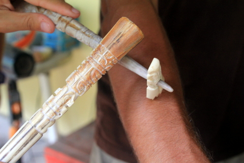 Le tatouage à l'ancienne (c'est une reconstitution, hein !) Ces divertissements infantiles ne nous ont toutefois pas écarté de notre objectif principal: visiter Hapatoni, village reclus, réputé pour ses sculpteurs sur os. Caché au pied d'une falaise verte et tigineuse à la fois, Hapatoni ne se laisse accoster que par grand calme et, même dans ce cas, seuls les marins endurcis par de nombreuses années sur les mers peuvent s'y aventurer, à leurs risques et périls, cela va de soi.
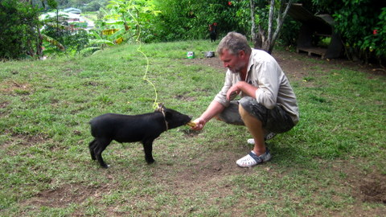 Eric nourrit le cochon Heureusement, Nico et Cécile sont versés dans les arts véliques et de fut pour eux un jeu d'enfants que d'ancrer leurs unités dans les eaux claires de la baie. Une fois à terre, non seulement nous avons pu observer à loisir les oeuvres des sculpteurs locaux (il doit y avoir 10 sculpteurs sur les 50 habitants du village et, comme par enchantement, quand nous sommes arrivés en annexe dans le petit port, les tables ont surgi de terre comme des champignons avant de se couvrir des artefacts osseux). Les prix pratiqués étant également osseux, nous nous sommes contentés d'une ballade le long du rivage, sans oublier de cueillir du fafa sauvage et de recevoir des bananes, des citrons, des pamplemousses et, évidemment, des noix de coco. |
||||||||||||||||||||
|
23 janvier 2013 - Mise à jour Ces derniers jours ont été mouvementés et seule ma paresse et ma désinvolture peuvent expliquer le silence du site. Pour tenter de me rattraper, voici, en bref, ce qui s'est passé durant le mois de janvier.
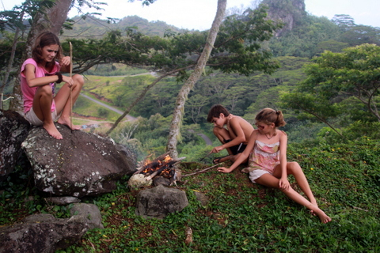 Barbecue en famille D'abord, nous avons décidé de monter sur le plateau central afin d'y faire griller quelques saucisses. L'entreprise n'est certes pas digne des 12 travaux d'Hercule mais vaut néanmoins la peine puisqu'on marche pendant 3 heures dans la végétation luxuriante à flanc de colline avant de déboucher sur le plateau tempéré à quelques centaines de mètres d'altitude.
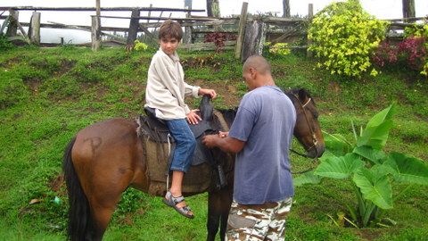 Sidney et le cheval magique Après cette mise en jambe, nous sommes retournés sur le plateau, non plus pour manger des saucisses mais pour galoper à travers champs et forêts. Comme il y a trois ans, nous avons enfourchés nos montures avant d'entamer le massacre systématique de nos aducteurs. Pour être tout-à-fait honnête, je devrais dire 'ils' car, pour ma part, j'avais préféré le calme de la baie aux tumultes équestres. Cécile, Sidney et Syr Daria se sont bien amusés et ont bien profité de l'air pur et des paysages époustouflants du centre de l'île.
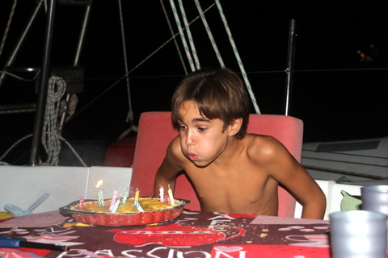 Sidney a 12 ans De retour au bateau, nous avons célébré en grande pompe les 12 ans de Sidney, à grand renfort de gâteaux, de pétards et de bougies explosives. Désormais, Sidney n'a plus que 364 jours à attendre pour son prochain anniversaire.
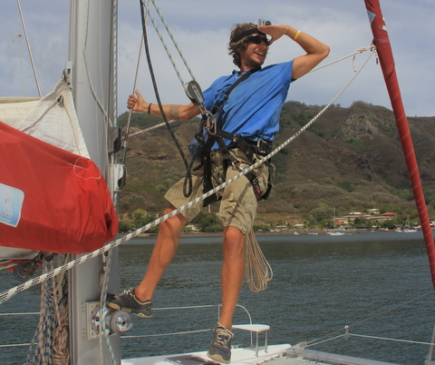 Manu s'envole dans le mât Ensuite, nous avions prévu une petite sortie en mer avec nos nouveaux amis. Avant de partir, nous avons vérifié la tête de mât, histoire de confirmer que tout allait bien. Grand malheur !! Les poulies de renvoi des drisses (les cordages qui passent dans le mât) étaient cassées ou presque. Résultat: de nombreuses heures d'effort pour Manu, perché à 20m du sol, à essayer de remplacer les poulies (car fort heureusement pour nous, non seulement nous avons pu en récupérer une dans la bôme mais il s'est trouvé un Fountaine Pajot au mouillage qui en avait une de rechange et qui a bien voulu nous la vendre). Pour faire court, disons que les concepteurs du bateau n'ont manifestement pas pris en considération le remplacement de certaines pièces. Pour les réas (les poulies), il faut retirer la tête de mât puis expulser l'axe à grand coups de marteau et effectuer le remplacement, entreprise qui doit se faire avec soin, sous peine de perdre irrémédiablement des pièces dans l'océan, 20m plus bas, comme ce fut le cas avec ma clef de 17...
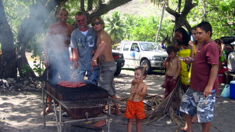 Nico, Eric et Manu s'occupe du barbecue. Quoi qu'il en soit, l'opération fut couronnée de succès, malgré l'évidente mauvaise volonté de l'axe à sortir de son logement. Manu, agile comme un singe, a réalisé un excellent travail. Bien sûr, j'aurais pu l'effectuer moi-même si l'envie m'en avait pris mais je préfère laisser les jeunes se forger une expérience qu'ils mettront à profit dans la vie, gnigni gni et gna gna gna. Quoi qu'il en soit, il aura quand même fallu 7 jours et la coopération de tout le mouillage pour arriver à nos fins. Pour fêter cela, nous avons décidé de tous fêter cela en organisant un BBQ à la plage, touristes visiteurs au milieu des professionnels locaux.
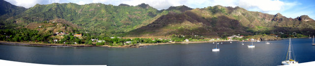 La baie de Taiohae, lieu de nos exploits Avant de partir sur Hawaii (si, si, on va partir en février, je vous l'assure), on a décidé de faire un petit test sous voile: on est retourné sur une autre île des Marquises, 90 nautiques plus au sud. |
||||||||||||||||||||
|
3 janvier 2013 - Epreuves C'est pas tout d'avoir traversé l'Atlantique, d'avoir survécu à un échouage en Argentine, d'avoir franchi le cap Horn, d'avoir été égorgé au Chili et d'avoir traversé le Pacifique, encore faut-il écrire sans fautes. Le test ultime, c'est Let It Be et la cruelle Cécile. Même les marins les plus endurcis tremblent quand ils posent le pied sur notre navire car ils savent qu'à tout moment ils peuvent se retrouver un crayon à la main en train d'écrire sous la dictée.
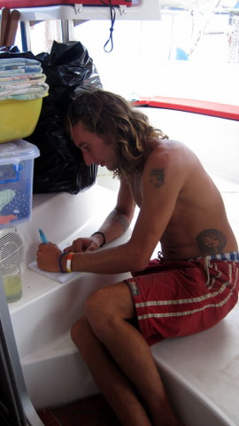 Manu s'applique C'est ce qui est arrivé à Manu qui a eu l'outrecuidance de claironner qu'il maîtrisait l'orthographe comme la voile. Résultat: 11 fautes sur la dictée, à peine mieux que Syr Daria sur le même exercice. Enfin, cela ne nous a pas empêché de passer avec lui un réveillon de folie: nous avons tenu à terre jusqu'à 23:30 avant de regagner Let It Be et d'assister, un verre de rhum à la main, un cigare dans l'autre, aux feux d'artifice qui crépitaient dans la baie.
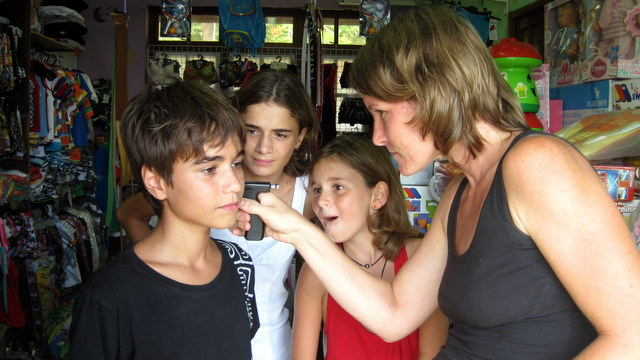 Sidney maîtrise, Kenya s'interroge et Syr Daria admire Dans un tout autre registre, Sidney a fini par convaincre Cécile de se faire trouer l'oreille malgré mon évidente désapprobation: pas plus tard qu'hier, un homme est venu chez Sidney et lui a dit: "Il n'y a que 2 types d'homme qui portent une boucle d'oreille, les gays et les pirates. Et comme je ne vois pas ton bateau...". Sur ce, dépliant lentement son bras tout en fixant l'inconnu dans les yeux, Sid lui indiqua notre bâtiment. Le visage déformé par la peur, l'autre lui tendit son portefeuille avant de disparaître sans demander son reste. |
||||||||||||||||||||
|
30 décembre 2012 - Taïpivai Il n'aurait pu en être autrement: nous avons sympathisé avec une famille bretonne qui s'est octroyé une année sabbatique en Polynésie. Tiens, tiens... Nous les avons appelés Canada Dry: ils ressemblaient aux Manuia mais ils ne contenaient pas d'alcool. Du moins, c'est ce qu'on pensait à ce moment. Nonobstant, on s'est tous retrouvés à Taipivai, modeste village d'une centaine d'âmes, tapi au fond d'une large baie.
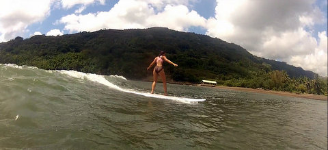 Cécile surfe sur la vague Au lieu de nous emmener dans des randos impossibles ou des agachons de l'extrême, Nicolas et Marie (et Roc, le casse-cou de service qui les accompagne) nous ont initiés aux joies du surf, dans la baie de Taïpivai. Ce sont de vrais pros, super équipés: ils ont plusieurs modèles de planche, convenant à la fois pour les champions en herbe comme Sidney ou les anciennes gloires comme moi. On s'est tous bien amusé dans les vagues, Cécile s'offrant des rides de folie sous le regard médusé des enfants. Bon, il faut reconnaître que les vagues tenaient plus du ressac que du tsunami mais on avançait quand même vite sur quelques dizaines de mètres.
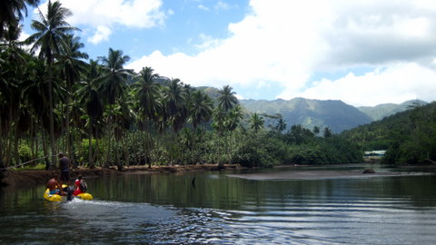 La rivière Taïpi se remonte aisément en dinghy Le lendemain, c'était la remontée fantastique en dinghy sur la rivière. Bien que certains tronçons fussent peu profonds, nous obligeant à mettre pieds à vase, nous avons pu rejoindre le centre du village et profiter d'un repas roboratif au son du yukulélé.
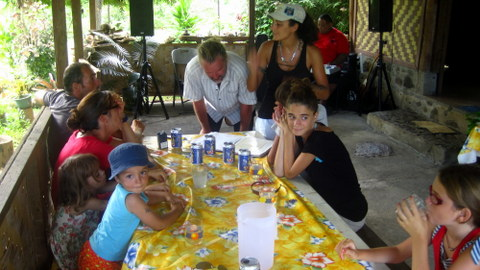 Petit snack entre amis En milieu d'après-midi, la marée était montée et les eaux chaudes et salées de la mer se mélangeaient avec les eaux froides dévalant des glaciers, ce qui rendait la baignade fort agréable. Nous avons plongé à maintes reprises, Kenya réussissant même l'exploit de s'entailler le talon sur une huître, sans gravité heureusement.
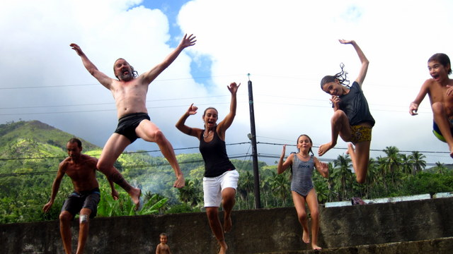 Tous le monde saute du quai dans la rivière Plus tard, on s'est tous retrouvé sur Kamini, le cata des bretons. La soirée s'est terminée fort tard, dans les brumes d'alcool se dissipant au son de la guitare et des bongos (merci Markus). |
||||||||||||||||||||
|
25 décembre 2012 - C'est Nowel 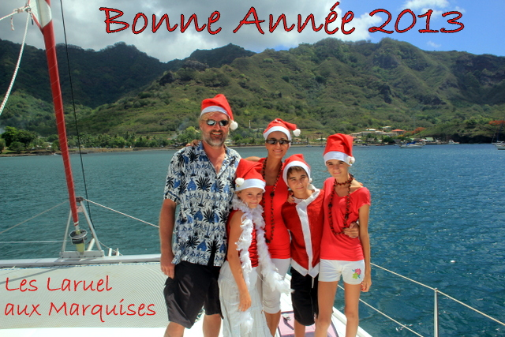 Tous sur le pont pour les voeux Les choses se compliquent. Ces derniers jours, une flottille de voiliers est arrivée du sud: c'est la transhumance des fainéants des mers qui essaient d'échapper aux cyclones des Tuams en se réfugiant aux Marquises. Du coup, la baie s'est remplie et nous avons même retrouvé de vieilles et de très vieilles connaissances.
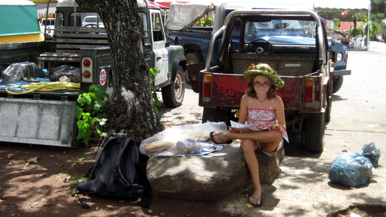 Le beau chapeau de Syr Daria Alors que nous glandouillions avec nonchalance sur le quai, nous avons vu rentrer les pêcheurs et leur bateau chargé de poisson frais (ce qui est heureux et légitime). Sans attendre, ils les ont vidés et ont levé les filets en rejetant les abats à la mer, ce qui n'a pas manqué d'attirer quelques beaux spécimens de requins gris qui se sont disputés les carcasses de poisson avec férocité.
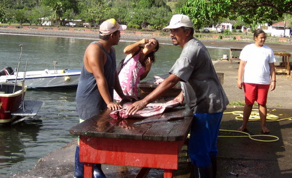 Cécile mange au milieu des pêcheurs Un peu plus tard, le long travail de sape de Syr Daria a fini par payer. Les filles et leur mère m'ont entraîné dans un traquenard sordide: sous le prétexte d'aller chercher des chips pour l'apéritif de Noël, nous avons mis l'annexe à l'eau et sommes partis vers le magasin. En chemin, comme par hasard, nous sommes passés devant "Chez Nadja" et, comme par hasard toujours, elle proposait ses services pour percer les oreilles. J'ai vite compris la manoeuvre mais trop tard hélas: il ne me restait plus qu'à donner mon assentiment et, hop!, les fillettes arboraient de magnifiques brillants. Enfin, quand je dis "fillettes", ça m'a encore fait un coup de vieux... Quand je pense que Sidney en voulait aussi. Il ne manquerait plus que ça !
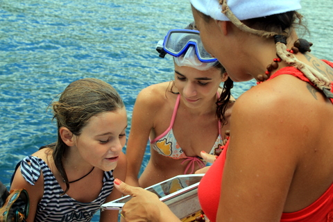 Comment souhaiter joyeux noël tout en nageant... Le midi venu, c'est-à-dire le soir en Europe, nous avons participé au réveillon en famille par iPad interposé. Et comme il faisait 31°C dans le bateau, les enfants profitaient des blancs pour piquer une tête entre deux phrases. Après cela, nous avons assisté à la messe de Noël en la cathédrale de Taiohae puis ouvert nos cadeaux tout en mangeant une excellente dinde qui était en fait un veau (du moins une partie de l'animal). Ensuite, il était presque 11h du soir et nous tombions tous de fatigue, peu habitués à ces exploits tardifs. |
||||||||||||||||||||
|
16 décembre 2012 - Bon anniversaire Cécile !! Toujours bien ancrés face au petit village d'Hakahau, nous ne faisons pas grand'chose: le matin, les enfants continuent à s'instruire assidûment tandis que les parents s'occupent de l'intendance et de l'encadrement. Cécile poursuit son harcèlement sur Claude, le boulanger, pour qu'il lui confie les mystérieux secrets de la pâtisserie. Depuis peu, nous avons décidé d'adopter des horaires circadiens: lever à 5h30 avec le soleil et coucher à 20h30 avec les poules (enfin, un peu plus tard quand même). Grâce à cela, nous sommes plus en phase avec les locaux. On peut, par exemple, acheter du poisson aux pêcheurs qui rentrent en général vers 7h du matin, heure à laquelle nous dormions jusqu'à maintenant.
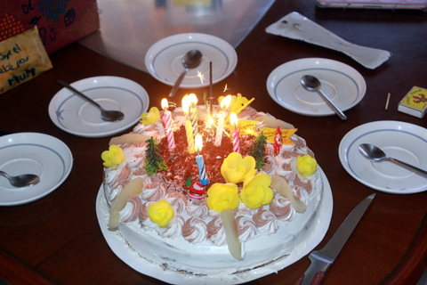 Le gâteau d'anniversaire Hier, prétextant un prétendu anniversaire, Cécile avait convaincu Claude de l'aider à fabriquer une forêt noire, pour y placer des bougies et, accessoirement, pour me faire plaisir puisque c'est le seul gâteau que je daigne manger, moi qui surveille ma ligne avec la plus grande attention.
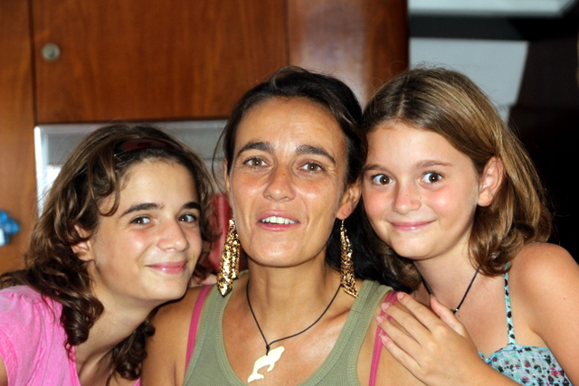 Cécile, ses 2 filles et ses boucles d'oreille Malgré l'absence d'ingrédients incontournables, comme le kirsch et les bigarreaux, Cécile et Claude se sont fort bien débrouillés: le gâteau était délicieux (et fort joli, ce qui ne gâche rien). Nous l'avons dégusté en ouvrant les cadeaux: de splendides boucles d'oreille de la part de Kenya et de Syr Daria, une magnifique fleur de tiaré de la part de Sidney. Mais, me direz-vous: "Et toi? Qu'as tu offert à ta douce ?". Honte sur moi, les temps sont durs, je n'ai eu que mon corps un peu décati à offrir...
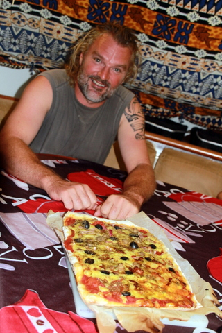 Eric, le pizzaiolo du jour Quoi qu'il en soit, Cécile ne m'en a pas tenu rigueur et nous avons poursuivi les festivités par quelques parties de Cluedo, de Milles Bornes et un bon film, avant de manger deux excellentes pizzas faites bateau, cuites au feu de gaz dans notre four... Il faut dire que la météo, en ce 16 décembre 2012, était peu clémente: 28°C et de gros nuages qui nous ont même pissé dessus pendant 15 minutes. Dans ces conditions, on a préféré rester bien sagement à l'abri dans le bateau (et on a récupéré l'eau de pluie pour la boire). |
||||||||||||||||||||
|
7 décembre 2012 - Patisserie à Hakahau Alors que l'Aranui quitte le quai de Hakahau pour approvisionner d'autres îles, Let It Be reste seul au mouillage dans la baie. Malgré mon sang froid légendaire, je ne peux m'empêcher de tressaillir quand je vois la proue de ce monstre de fer s'approcher à quelques mètres de notre navire. Mais il faut dire que l'équipage du cargo est bien entraîné et habitué aux espaces confinés des ports marquisiens, encombrés de surcroît par les vedettes des pêcheurs. Nonobstant, il suffirait d'une petite inattention pour que notre embarcation composite soit réduite à l'état d'épave sans avertissement. Mais non, une fois de plus, nous nous en sommes sortis indemnes et nous avons pu passer à la suite de notre programme: la pâtisserie.
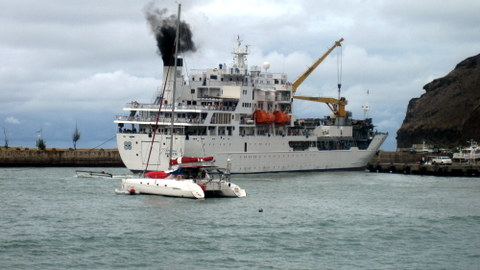 L'énorme Aranui quitte le rikiki quai On peut se demander ce que des voyageurs au long cours font dans une boulangerie au fond des Marquises... La réponse est simple: à Hakahau, il y a Claude, touche à tout de génie, ayant exercé toutes les professions possibles sur l'île: quincaillier, restaurateur, mécanicien et boulanger/pâtissier. Il a même été pilote de rallye (mais c'était avant d'aboutir ici). Claude a fait ses études de boulanger à Liège, avant d'entamer une carrière de légionnaire et d'aboutir par un mystérieux hasard à Ua Pou.
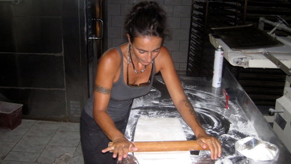 Cécile et le rouleau diabolique Nous l'avions rencontré ici-même, il y a 3 ans, et son accent inimitable ainsi que son pain inséchable nous avaient fait forte impression. Cette fois, nous avions décidé de lui demander moult conseils, tant et si bien que nous avons fini dans son atelier, à préparer des pains de campagne, de la pâte brisée, de la pâte feuilletée, des choux à la crème, des tartes et des galettes des rois.
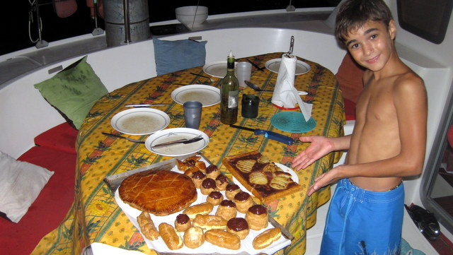 Le fruit de notre travail Sous nos yeux éberlués, Claude nous a démontré son savoir faire, tout en nous initiant aux plaisirs du pétrissage, de l'étirage, du dressage, des dorures, etc. A la fin de la journée, nous avions réalisé assez de gâteaux pour ouvrir une pâtisserie. Restait à ramener tout cela au bateau, alors que la houle s'était levée dans la baie. Grâce à l'adresse de Cécile, nous y sommes néanmoins arrivés dans des conditions rocambolesques qui nous auraient sûrement valu des applaudissements si l'on avait été au cirque.
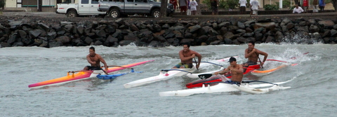 Les Va'a profitent de la houle pour surfer Les enfants m'en sont témoins: les choux à la crème étaient délicieux, la galette savoureuse et la tarte croustillable. Nous avons appris des tas de trucs, à commencer par le fait que la farine vendue dans le commerce en Polynésie n'a rien à voir avec celle des boulangeries industrielles: il aura suffit de ce petit changement d'ingrédient pour rendre notre pain maison d'une légèreté incomparable. D'ailleurs, on en a acheté 50 kg à Claude sur le champ. Par contre, maintenant que j'ai vu comment on faisait de la pâte feuilletée, je mangerai mes croissants avec compassion, par respect pour leur fabricant. Quel boulot... c'est invraisemblable... |
||||||||||||||||||||
|
28 novembre 2012 - Sur la route de Ua Pou J'écoutais le disk jockey, dans le voilier qui m'emportait, sur la route de Ua Pou, sur la route de Ua Pou. Eh oui, on a enfin quitté Hiva Oa: il ne nous manquait qu'un régime de banane gigantesque, que nous reçûmes du grand chef local, du moins si l'on se fie au mini-festival d'il y a 3 ans.
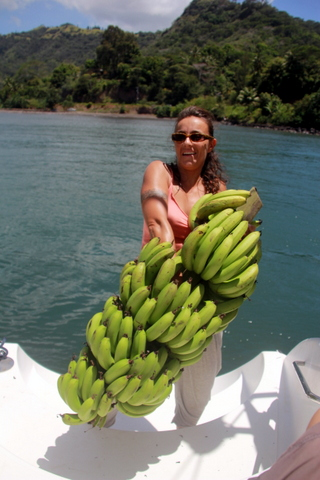 Cécile et le régime géant En effet, nous l'avons croisé sur le quai et malgré ses effets civils, nous l'avons reconnu et congratulé pour ses performances d'antan, en précisant qu'il était désormais une star en Belgique, grâce aux films que nous avions réalisés lors du festival. Ne se tenant plus, il nous révéla un lourd secret: en fait, il n'était pas chef mais jardinier et nous promit moultes fruits de son fa'apu (potager), ce que la politesse et le plaisir nous ont incités à accepter.
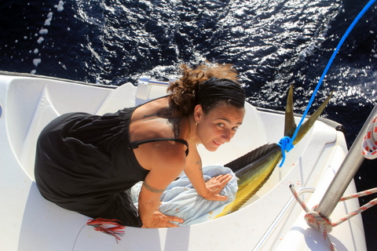 Cécile s'occupe du Mahi Mahi La traversée de Tahuata vers Ua Pou est longue de 65 nautiques. Nous avions décidé de nous lever à l'aube afin de traverser pendant la journée. Vers 5h30, nous avons levé l'ancre et mis le cas à l'ouest. Comme prévu, nous avons eu un petit vent de 10-12 noeuds en un joli travers durant toute la traversée. Toutes voiles dehors, Let It Be filait à 5-6 noeuds et il nous a fallu 11h pour rejoindre Hakahau, ce qui nous a laissé plein de temps pour pêcher 2 beaux mahi mahi (enfin, pour être précis, un beau et une belle).
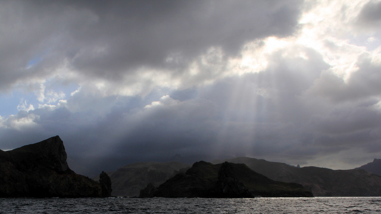 La côte nord de Ua Pou est assez découpée Malgré notre appétit vorace, c'est beaucoup de poisson pour une honnête famille, fut-elle belge. Dès notre arrivée, nous nous sommes mis en quête d'une âme charitable pour accepter le poisson, notre cadeau de bienvenue à Ua Pou, en quelque sorte. Nous l'avons confié au président du club de Va'a local, à la grande joie des rameurs qui ont dévoré le poisson comme s'ils avaient pagayé toute l'après-midi. |
||||||||||||||||||||
|
23 novembre 2012 - On insiste Après un bref séjour à Tahuata, l'île voisine, où j'ai pu valider que mes aptitudes au harpon n'ont pas progressé depuis notre dernière visite, nous sommes revenus à Hiva Oa, le temps de récupérer nos vasques, notre casse-tête et notre pagaie de guerre, sans oublier notre chipsier (c'est comme un saladier mais pour les chips).
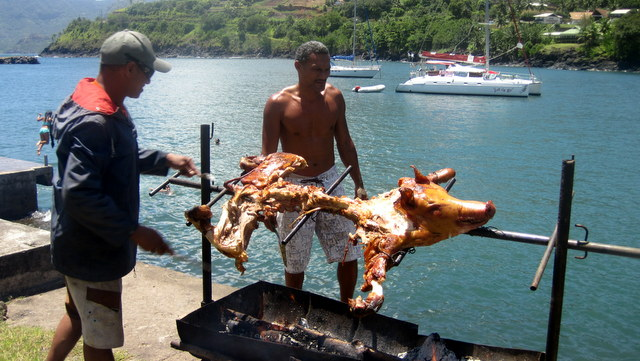 Le cochon tourne et tourne et tourne Evidemment, la pompe de gavage du moteur d'annexe a eu une fuite que j'ai colmatée avec de l'époxy et le congélateur a refusé de refroidir, ce qui m'a obligé à remplacer le boitier de contrôle et, finalement, à me rendre compte que c'était la sonde qui merdait. Je précise, au cas où certains se demanderaient ce qu'on fait. 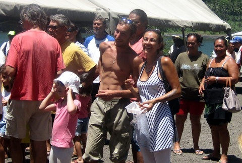 Cécile et Manu, son nouvel ami, que j'ai à l'oeil Pour le reste, on a vu arriver Manu, 25 ans, sur son bateau de 8m, en provenance du Chili... Il a franchi le cap Horn et, après s'être fait égorger à Valdivia (littéralement), il a décidé d'aller à Hong Kong en direct. Il a dû s'arrêter aux Marquises parce que ses voiles étaient déchirées. Quand je pense qu'il y a des gens qui trouvent que nous sommes téméraires... |
||||||||||||||||||||
|
10 novembre 2012 - On s'installe Le moins que l'on puisse dire est que notre séjour aux Marquises a commencé sur les chapeaux de roues. Les fêtes se succèdent, à terre comme à bord, pour le plus grand plaisir de tous. En général, on se donne rendez-vous vers les 17h, à la tombée du jour, et l'on mange, boit, chante jusque tard dans la nuit, vers les 21h. Ces horaires nous permettent de faire la fête tout en assurant le suivi de l'école jour après jour.
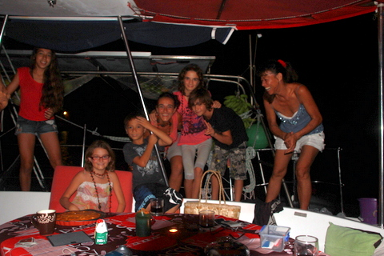 Fête sur Let It Be En outre, comme annoncé dans un message précédent (pour les assidus), j'ai dû me résoudre à démonter la moitié du moteur d'annexe afin d'en nettoyer le carburateur encrassé, ce qui m'a valu une cuisson à petit feu dans le dinghy. Mes mains d'ordinaire si habiles ont laissé tomber un racagnac et une clé de 10 dans l'eau trouble, probablement à cause d'un début d'ébullition au niveau du lobe frontal droit de mon cerveau, siège reconnu de la motricité.
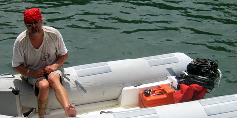 Réparation sous le soleil Le moteur ronronnant à nouveau, nous sommes partis rendre visite à Teiki, que nous avons chargé de réaliser un casse-tête de bonne dimension. Cet objet d'une esthétique irréprochable servait autrefois à calmer les récalcitrants: un bon coup sur l'occiput et la cervelle de l'importun se mettait à suinter, avec pour effet l'obtention d'un calme éternel. Disposant d'une musculature impressionnante, j'ai demandé un objet d'un poids respectable, de sorte que désormais, plus personne ne me manque de respect sous peine de se faire fracasser, même si, de nos jours, l'existence d'armes à feu rend le casse-tête moins pratique qu'autrefois. Et puis, c'est très décoratif (quand c'est fini, hein, sur la photo, c'est le dégrossi).
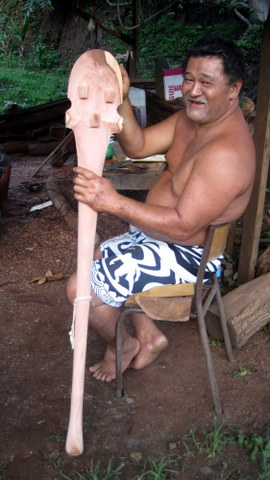 Teiki nous expose son ébauche Pour ne pas changer, nous avons également pris rendez-vous avec Piu, le tatoueur qui monte pour le moment. De fait, il nous a tous les deux encrés en quelques heures avec une maestria surnaturelle. Je vous laisse deviner qui est qui et où est quoi sur la photo suivante. Petit indice: Cécile est d'ordinaire plus bronzée et plus fine que moi... Quoi qu'il en soit, nous trouvons ces tatouages d'une grande finesse et nous adorons la spiritualité qu'ils véhiculent, même s'il est difficile de l'exprimer par écrit.
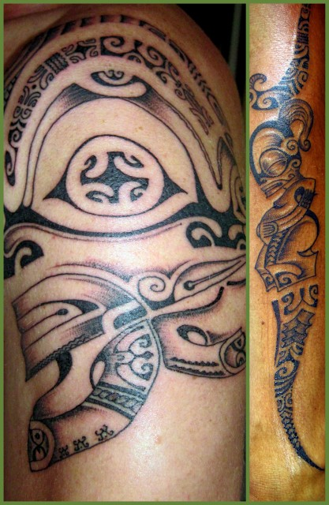 C'est joli hein ? C'est vraiment magnifique et nous sommes tous les deux très fiers d'arborer ces 'tiki' à même la peau. Pour le reste, nous continuons à cuire gentiment au soleil d'Atuona où il fait 26°C la nuit et 31°C la journée. Nous allons séjourner dans les Marquises du sud jusqu'à ce que bon nous plaise et nous irons ensuite là où notre bon plaisir nous mènera. A moins qu'on aille ailleurs... |
||||||||||||||||||||
|
1 novembre 2012 - La Toussaint d'Atuona Nous revoilà ! Après 3 jours de navigation, nous avons touché terre à Atuona, sur l'île de Hiva Oa, aux Marquises, là-même où Jack Bwel est enterré. Nous comptions y faire commerce et, de fait, nous avions noué des contacts chaleureux avec un artisan local disposant de deux mains droites. Nous étions impatients de le retrouver, après 3 ans et de voir l'état d'avancement de notre commande...
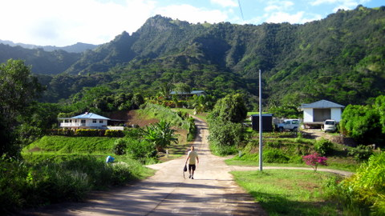 Atuona-le-haut A peine étions-nous arrivés que nous croisâmes le chemin de Mui, charmante Marquisienne et fort aimable personne. Comme par le passé, aux Marquises, tout le monde est cousin, même les poppas (les blancs), ce qui m'autorise à croire que le terme 'cousin' ne doit pas être pris dans son sens le plus strict. Bref, tout le monde se connaît et, grâce à Moï, notre vie sociale s'est soudainement remplie et une fois dans la danse, il faut maintenir le rythme.
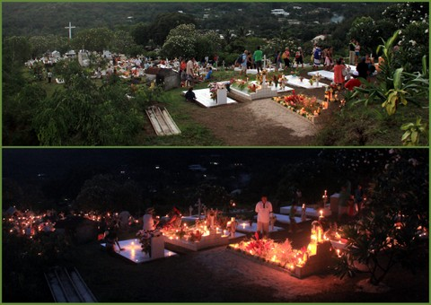 La nuit tombe sur les tombes éclairées Au niveau gastronomique, c'est la renaissance: Moï nous a gentiment invités chez elle afin de déguster un excellent sanglier sauvage agrémenté d'une potée locale et d'une salade d'avocats, bananes et pomelos. Un délice. Avec ses paysages toujours aussi somptueux et ses habitants toujours aussi hospitaliers, les Marquises nous enchantent une fois de plus.
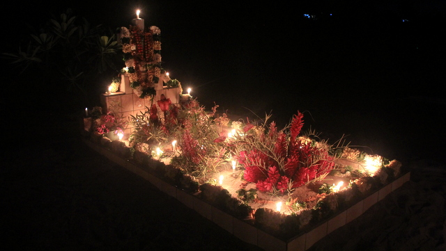 Impressionnant Le lendemain, nous avions tous rendez-vous au cimetière afin de célébrer tous les saints. En effet, le premier novembre, à Atuona comme dans toute la chrétienté, on honore les morts. Une bonne partie des citoyens s'étaient dirigés vers le petit cimetière qui surplombe la ville et s'étaient regroupés par famille autour des tombes de leurs défunts ancêtres. Au milieu trônait un monsieur en blanc qui nous expliquait, en français et en marquisien, les secrets de la vraie foi. Un peu plus tard, les tombes ayant été bénies, chacun pu se recueillir en silence à la lueur naissante des centaines de bougies disposées sur les tombes et qui illuminaient l'endroit. Enfin, quand je dis 'en silence', c'est relatif. En effet, de temps en temps, prise par une passion incontrolable, une jeune fille entame, à peine audible, une litanie mortuaire, aussitôt reprise par ses voisins. De fil en aiguille, amplifié par la multitude, le chant prend alors de l'ampleur avant de s'éteindre doucement, comme il est apparu. Puis il reprend un peu plus loin, avec d'autres mots, d'autres accords, d'autres rythmes mais toujours la même ferveur dans le crépuscule qui enveloppe Hiva Oa. |
||||||||||||||||||||
|
25 octobre 2012 - Adieu les Tuamotu Depuis quelques jours, nous sommes à quai, annonçant à qui veut l'entendre que nous partons le lendemain. Hélas, le lendemain, les conditions sont toujours contraires. Soit il y a trop de vent, soit il pleut, soit il neige (mais c'est rare), soit il fait trop fiu (c'est une expression polynésienne qui signifie que l'on est tenté par l'indolence). Bref, on est toujours là, comme les magnolias.
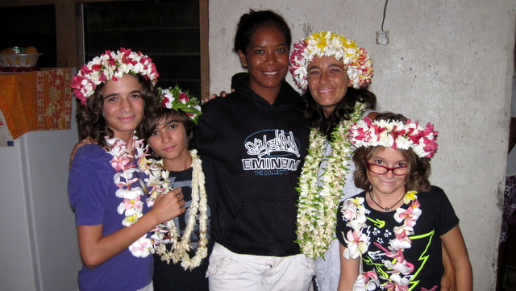 Notre départ est bien fleuri Malgré tout, Hinano (pas la bière, la copine de Cécile) nous avait invités pour célébrer notre départ. Nous avons été très heureux de recevoir chacun une couronne et un collier de fleurs parfumées. Non seulement, cela nous a tous embellis mais cela dégage une odeur agréable que nous sentons persister dans le bateau, longtemps après avoir enlevé nos bijoux végétaux pour les pendre dans le carré.
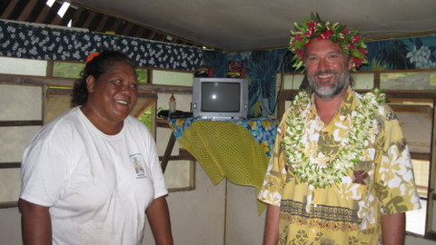 Fanny et Eric Dès demain, c'est sûr, nous quitterons les Tuams pour rejoindre les Marquises, à quelques 500 nm d'ici, soit 4 jours de mer, vraisemblablement au près tout du long. |
||||||||||||||||||||
|
17 octobre 2012 - Sidney Tarantino Renonçant à partir pour les Marquises pour cause de fenêtre météo inadéquate, nous sommes retournés dans le secteur où, grâce à Google Earth, j'avais repéré un mouillage exempt de patates de corail, en plein dans le bleu. De fait, depuis notre arrivée dans le secteur, on profite de l'eau claire... En plus, notre nouveau mouillage, composé de notre nouvelle ancre de 25 kg, d'une nouvelle pantoire dont les brins en polyamide mesurent 12m et d'un nouveau mousqueton en acier inox de 12 en guise d'étalingure (quel beau mot, quand même!), semble fort efficace même si les tests réalisés dans moins de 2m de profondeur avec des vents de 15 noeuds ne sont pas forcément concluants.
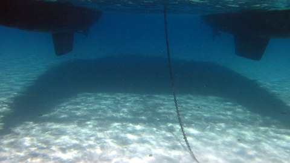 Les quillons de Let It Be frôlent le sable Depuis que nous avons acquis Sony Vegas Pro, un logiciel perfectionné de montage cinématographique, Sidney s'est mis en tête de faire des petits films en essayant de trafiquer les images de sorte à obtenir les effets spéciaux les plus étranges. Evidemment, il a commencé par s'essayer au sabre laser et aux bagarres style kung-fu, à grand renfort de coups de poing, de pieds, de genoux ou de toute autre partie du corps humain. Grâce au logiciel et à la coopération de ses soeurs comme actrices, cette entreprise difficile s'est révélée possible et, presque tous les soirs, nous avons droit à des projections privées. Les effets spéciaux sont de plus en plus élaborés. Le générique occupe en outre une place de plus en plus importante: Scénario: Sidney, Réalisation: Sidney, Montage: Sidney, Effets spéciaux: Sidney, Bande son: Sidney, etc.
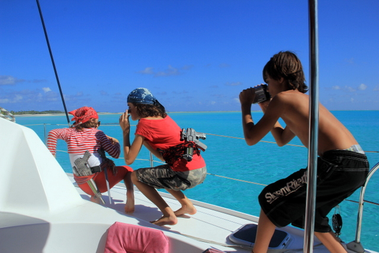 Silence, on tourne Afin d'encourager cette vocation persistante, j'avais proposé à Sidney d'écrire un petit scénario afin de compléter ses effets spéciaux par une histoire. Tout en niant l'utilité d'une telle démarche, complètement inepte à ses yeux, Sidney accepta l'idée.
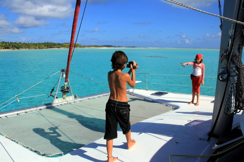 Syr Daria, très appliquée Pendant 2 jours, Let It Be s'est transformé en plateau de tournage. Chaque membre de la famille a contribué à sa manière: acteur, costumière, réalisateur, accessoiriste, preneur de son, etc. Bref, on a tourné pas moins de 100 petits bouts de film, qu'il a fallu monter par la suite, ce qui nous a pris 5 après-midi, à Sidney et moi, respectivement aux effets spéciaux et au montage final et bande son.
Grâce à Cécile, nous avons également un magnifique reportage photo. Il faut avouer que les décors, entièrement naturels, sont d'une beauté somptueuse et que, n'était le vent qui soufflait bruyament dans le micro, les conditions météo étaient propices à la pratique du cinéma en plein air. Le film est maintenant dans la boîte et j'essaierai de le publier sur Internet quand on sera à Hawaii (ca fait quand même 500Mb au total...).
Après un tel effort, Cécile et moi sommes partis en kayak vers les dunes de sable qui serpentent dans les eaux peu profondes et, par conséquent, très chaudes, de l'est du lagon de Makemo. C'est là qu'on trouve des requins fainéants qui glandent avec persévérance. |
||||||||||||||||||||
|
13 octobre 2012 - Visite officielle Dès l'aube, ce matin, il régnait une activité fébrile sur l'esplanade de la mairie, juste au bout du quai. Intrigués, nous nous rendîmes sur les lieux pour apprendre que le haut-commissaire pour les Tuamotu-Gambier arrivait en personne l'après-midi même.
A 13h30, comme quelques badauds, nous étions tous les 5 au bout du quai, à attendre sous le cagnard la venue des grands chefs. A force, on a lié connaissance avec les étudiants du collège, réquisitionnés pour peupler la place et faire croire aux grands pontes que leur visite intéressait quelqu'un. Il faut dire que les vieux étaient depuis longtemps partis à la pêche.
Moi, j'étais plus intéressé par l'orchestre de percussion qui s'évertuait à maintenir une atmosphère festive en attendant l'arrivée des plénipotentiaires, lesquels se montrèrent avec 1h30 de retard...
Après quelques discours insipides où le maire remercie le commissaire qui, à son tour remercie le maire, et s'autocongratule du travail déjà effectué, sans omettre les projets grandioses en cours d'éxécution, nous avons regagné Let It Be.
Une dizaine de jeunes Paumotus jouaient à proximité. Quand ils virent Kenya, Sidney et Syr Daria sortir et plonger du bateau, ils pratiquèrent une manoeuvre d'encerclement, tant et si bien que le bateau finit par se transformer en plongeoir géant, d'où se jetaient à grands cris les enfants du coin. |
||||||||||||||||||||
|
8 octobre 2012 - Labatafé Après avoir dévalisé l'épicier du coin, nous sommes partis labatafé, c'est-à-dire dans le secteur, c'est à dire au bout de l'atoll, où il n'y a pas d'habitations, à l'exception d'abris sommaires pour les cueilleurs de copra.
Nous avons zigzagué à travers les nombreuses patates de corail, avant de trouver un mouillage peu profond sur le sable. Heureusement, la météo est clémente pour les jours à venir, ce qui nous permet de mouiller sur notre ancre de secours en attendant la nouvelle.
Une fois arrivés dans ce paysage magnifique, nous avons pu d'une part valider une hypothèse intéressante: nous sommes bien le seul voilier dans l'atoll, d'autre part entreprendre une visite des lieux.
Les enfants sont partis en pirogue avec Cécile en direction de la plage abandonnée, des coquillages et des cocotiers. Au péril de leur vie, ils ont accostés sur ces rivages inconnus et déclaré l'endroit propriété du roi des Belges, en accord avec les usages et le droit maritime international.
Malgré une exploration systématique, ils n'ont rencontré âme qui vive (ou pas, d'ailleurs). Ils se sont donc livrés à des jeux divers pendant toute l'après-midi, sous le regard bienveillant de leur mère.
Pour le retour, les enfants avaient décidé d'abandonner la pirogue au profit de la natation en eau libre. Grâce à leur technique irréprochable, ils ont nagé à la proue du kayak, tels des dauphins, jusqu'au retour sur Let It Be. |
||||||||||||||||||||
|
5 octobre 2012 - Makemo - Escale technique Certains parmi vous le suspectent, avec raison, je dois l'avouer. Tout n'est pas rose aux Tuamotus. Notre levée d'ancre à Fakarava sud fut un peu trop sportive au goût de l'ancre: elle s'est rebiffée, tant et si bien qu'une fois extraite de l'eau, elle était complètement vrillée. A Tahanea, nous l'avons plantée par 3m de fond dans le sable puis essuyé un modeste 25 noeuds au mouillage. Après inspection, et malgré nos 45m de chaîne (dans 2m d'eau...) l'ancre avait chassé de près de 6m, la torsion des pelles entraînant un mouvement de tire-bouchon extracteur d'ancre... Bref, elle est kaput. D'ailleurs, nous l'avons laissée sur place. Profitant de leur présence, nous avons emprunté une ancre et un peu de chaîne à un bateau voisin afin de tenir, le temps de remplacer l'ancre principale par l'ancre secondaire.
Nous sommes donc partis vers Makemo, à 50 nautiques, dans l'espoir d'y trouver un réseau téléphonique nous permettant de passer commande d'une nouvelle ancre à Papeete (faut pas rêver, impossible de trouver une ancre de 25 kg dans les Tuams). En chemin, nous avons hissé la grand'voile, qui s'est misérablement coincée entre le premier et le deuxième ris. Impossible de la hisser, impossible de l'affaler: un chariot était coincé au niveau de la deuxième barre de flèche. La voile était tellement bien bloquée que nous avons arraché la latte de GV en essayant d'affaler. J'ai donc hissé Cécile en pleine navigation, à l'aide de la drisse de spi, pour qu'elle décoince ce satané chariot. Après analyse, nous avons constaté que le blocage était dû à une bille du roulement du chariot qui avait quitté son logement et s'était placée entre le rail et le chariot. La panne totalement impossible... Ensuite, Cécile s'est acharnée au marteau pendant 30 minutes sur le chariot pour le libérer, tout en étant balottée par les flots. Elle a évidemment réussi, car Cécile réussi toujours ce qu'elle entreprend.
En clair, on est arrivé à Makemo sur notre ancre de secours (un peu rikiki pour notre bâtiment) et sans pouvoir hisser la grand'voile, à moins de réparer le chariot (et, accessoirement, trouver les raisons de cet incident improbable). Comble de malchance, à peine étions-nous arrivés que le réseau GSM de Makemo est tombé en panne. Heureusement, nous avons accès à Internet et, à l'heure où j'écris ces lignes, notre nouvelle ancre vogue vers Makemo (coup de chance, la goélette qui dessert Makemo une fois par mois part précisément ce samedi). Une fois à quai, j'ai démonté tous les chariots, je les ai inspectés un par un et j'ai changé leur position, de sorte que le chariot récalcitrant soit dorénavant en bas, ce qui facilitera les choses s'il décide de se coincer à nouveau (ce qui m'étonnerait, vu les menaces dont il a été l'objet en cas de récidive et le soin que j'ai apporté à rectifier imperceptiblement les gorges du roulement). Pour le reste, rien de spécial à signaler: une des pompes de gavage de l'osmoseur(déssalinisateur) est tombée en panne et le moteur d'annexe semble avoir perdu son ralenti, ce qui signifie que je vais devoir en nettoyer le carbu. Enfin, gardons le sens des priorités: s'il est difficile de voyager sans ancre ou sans GV, on peut très bien se passer de pompe d'osmoseur ou de moteur d'annexe... En outre, à Makemo, il y a un supermarché bien fourni et un quai qui nous permettra d'installer l'ancre en toute sérénité. |
||||||||||||||||||||
|
3 octobre 2012 - Moment de grâce Cette fois, ça y est. On peut rentrer. On a réalisé notre rêve: nager avec les mantas.
Vers 16h, nous avions décidé de nous lancer en snorkeling dans la passe de Tahanea. On voulait longer la rive gentiment, par 3 à 5m de fond et survoler le corail et ses occupants.
Alors que nous dérivions doucement en regardant les poissons perroquets, nous avons vu foncer droit sur nous une raie manta de 3m d'envergure. A quelques centimètres de nous, elle a amorcé un virage plongeant sous notre regard médusé. Faisant demi-tour, elle revint nous frôler de plus près encore, la gueule grande ouverte, à la recherche de plancton.
Un peu plus tard, nous trouvant sympathiques, elle revint avec ses copines et, pendant 1h, les 4 raies nous ont gratifiés d'un spectacle hallucinant, s'approchant suffisamment pour qu'on puisse les toucher. Incroyable. On a vraiment vécu un moment extraordinaire, d'une grande poésie, tant ces animaux géants évoluent avec grâce et souplesse, semblant jouer avec nous tout en se sustentant.
Encore sous l'effet du spectacle divin, nous sommes revenus sur Tereva, retrouver Patrick et Philippe, qui avaient fait une plongée dérivante en même temps que nous mais avec bouteille. Tant pis pour eux, les malheureux, le courant était tel au milieu de la passe qu'ils sont restés à peine 15 minutes sous l'eau avant de se retrouver dans le lagon, sans avoir rien vu d'intéressant.
Comme nous quittions Tahanea et nos amis dès le lendemain à l'aube, nous avons célébré nos adieux dans une cabane de pêcheur sur le rivage en nous goinfrant une fois de plus de langoustes, gracieusement offertes par Alphonse contre quelques litres de bière. |
||||||||||||||||||||
|
28 septembre 2012 - Initiation à la plongée Puisque nous avons désormais un compresseur et qu'en plus je suis parvenu tant bien que mal à réparer la fuite d'air due à un joint torique défaillant, nous avons décidé d'initier les enfants à la plongée bouteille.
Bien sûr, ils avaient déjà plongé avec un club et je les avais déjà emmenés avec moi, en leur cédant mon détendeur de secours. Mais, cette fois, il s'agissait d'être autonome: les enfants voulaient plonger avec leur propre matériel.
Le bateau étant mouillé par 3m de fond sur un banc de sable, l'occasion était toute trouvée pour se lancer à l'eau. La théorie vite expédiée, chacun à leur tour, les enfants se sont enfoncés dans la grande bleue, sous l'oeil attentif de leur papa.
Les enfants sont descendus un par un le long de la corde lestée installée à l'arrière du bateau, avant d'entamer quelques exercices de stabilisation sous-marine. Ensuite, ils sont partis pour une petite exploration en solo des patates de corail autour du bateau, toujours marqués à la culotte par leur géniteur supposé. Tout s'est bien passé et les enfants ont même pu faire copain-copain avec un napoléon (une espèce de gros poisson vert) qui adore nos coques, au point de ne plus vouloir les quitter. |
||||||||||||||||||||
|
26 septembre 2012 - Festival de langoustes De la passe sud de Fakarava à la passe de Tahanea, il y a 50 nm que nous avons effectués en un peu plus de 8 heures, grâce à l'action combinée du moteur bâbord et des voiles. Pour l'occasion, nous naviguions avec les SDF (Saltimbanques des Flots) que nous avions rencontrés aux Gambier il y a 3 mois et que nous avions fortuitement retrouvés à Fakarava.
L'atoll de Tahanea n'est pas habité de façon permanente, ce qui explique la foison de langoustes sur ses rivages coralliens. Une fois arrivés, nous avons rencontré Alphonse qui nous a gentiment proposé de nous aider à nous goinfrer. D'ordinaire, je n'aime pas trop contribuer à l'extinction d'une espèce, aussi délicieuse soit-elle. Cependant, les 12 langoustes étaient offertes de si bon coeur que nous n'avons pu refuser. Nous avons accepté le présent d'Alphonse avant de faire une petite plongée bouteille le long du tombant. Le corail est ici en pleine forme et nous avons réellement profité de notre expédition, même si notre sécurité de surface a eu toutes les peines du monde à nous localiser au terme de notre plongée, le courant nous ayant traîtreusement emmenés le long de la côte au lieu de nous propulser dans le lagon.
Qu'à cela ne tienne, nous avons décidé de rejoindre le secteur, au sud-est, où nous attendait un magnifique banc de sable peu profond et exempt de patates de corail. Un peu plus loin nous attendait une plage comme dans les pubs, tout-à-fait propice à l'organisation d'un barbecue de derrière les cocotiers.
Dès notre arrivée, nous avons retrouvé Tereva et ses charmants occupants, Philippe et Michèle. Avec nos amis de SDF, nous étions donc 11 à dévorer les langoustes et les labres pêchés le matin même.
L'endroit est paradisiaque et, n'était la chaleur un peu excessive pour un mois de septembre, on se serait bien installé à terre pour quelques jours. Il faut dire qu'il n'y a pas grand'chose à faire dans ces atolls, à part pêcher, manger, dormir et bronzer. Enfin, pour être honnête, à force d'imagination, on a quand même trouvé quelques activités annexes, comme, par exemple, changer l'ancre principale qui est complètement tordue, réparer le compresseur qui fuit et stratifier l'annexe qui prend l'eau. Je vous raconterai tout cela dans un prochain billet... |
||||||||||||||||||||
|
20 septembre 2012 - Fin de l'intermède postal Notre colis EAD étant enfin arrivé à destination (ici, donc), nous allons pouvoir repartir vers de nouvelles aventures. Il faut dire qu'à part entasser les noix de coco sur la plage, je n'ai pas grand'chose à faire, le village de Fakarava étant situé loin des passes et loin des plages de sable rose. Enfin, au risque de me répéter, les enfants ont vraiment bien travaillé, ce qui laisse présager de quelques bons moments de glande dans le secteur (comprenne qui pourra, hein DD ?)
Après une semaine passée à attendre, nous allons redescendre vers la passe sud puis nous diriger vers l'atoll de Tahanea plus connu pour son insignifiant anonymat que pour ses hotels de luxe. J'en profite pour souhaiter un bon anniversaire à nos jeunes mariés: Luc et Axelle. |
||||||||||||||||||||
|
17 septembre 2012 - Le snack de Fakarava Une fois n'est pas coutume, nous attendons un colis de l'EAD (Ecole A Distance) que nous avons fait suivre à Fakarava, dont la poste est située au nord de l'atoll. Nous étions au sud, nous avons donc levé l'ancre pour nous rendre au nord, soit 30 nautiques de navigation dans le lagon.
Une fois arrivés, nous avons eu la surprise de retrouver Patrick et Renée, les SDF, que nous avions rencontrés aux Gambier. Sans attendre, nous sommes retournés au petit restaurant très pittoresque qui nous avait déjà accueillis il y a 3 ans.
L'endroit est vraiment magnifique et la cuisine des îles est très agréable: filets de mahi mahi panés à la pulpe de coco fraîche pour les adultes, poisson à la tahitienne pour les enfants... Ensuite, baignade avec les requins nourrice pour les enfants, et propos ineptes pour les adultes.
Pour le reste, il n'y a pas grand'chose à faire à Fakarava nord, si ce n'est attendre notre courrier, dont on a mystérieusement perdu la trace entre Papeete et Fakarava, et faire classe avec assiduité. Grâce à cela, nous ne découvrons pas de nouveaux atolls mais les enfants découvrent la grammaire et les isométries, ce qui signifie la fin de la 5ème pour Sidney et la fin de la 4ème pour Syr Daria, Kenya errant quelque part au milieu de la première secondaire. Etant donné les lacunes dans les cours que nous recevons, la progression n'est pas vraiment linéaire dans l'ensemble des matières: Kenya a fini l'anglais jusque fin 2ème, elle termine la géographie et l'histoire de 1ère mais elle est à court de maths pour l'instant... |
||||||||||||||||||||
|
13 septembre 2012 - Fakarava, A la plage Enfin, le vent s'est calmé. On en a profité pour faire un petit plongeon dans la passe dont la beauté attire chaque année des dizaines de plongeurs venus du monde entier. Nous, on vient pas du monde entier mais on a le droit de s'ébaubir quand même.
Le snorkeling dérivant est vraiment fantastique: attaché au dinghy qu'on laisse dériver dans la passe, on voit le paysage sous-marin défiler devant soi, comme dans un cinéma. Il y a des centaines de poissons de toutes les couleurs et même des requins maraudeurs qui sillonnent le tombant.
C'est vraiment très amusant mais pas autant que les courses de bernard l'hermitte dans le sable rose de la barrière de corail.
Pour s'adonner à ce passe-temps, il convient de trouver une plage de sable rose, ce qui n'est pas évident, sauf à Fakarava, quelle chance. Ensuite, il faut se rendre à la plage en question en annexe, en esquivant habilement les patates de corail. Une fois arrivé, il convient d'ancrer l'annexe les pieds dans l'eau.
A la plage, il faut d'abord débusquer les mollusques et les placer ensuite dans des tranchées creusées dans le sable. Enfin, les paris sont ouverts pour savoir laquelle de ces charmantes bestioles se déplacera le plus vite jusqu'à la ligne d'arrivée. C'est passionnant et les enfants sont capables de rester à la plage pendant des heures.
Quant à Cécile, elle préfère les entrecôtes cuites au barbecue sur le pont. Comme par hasard, nous avions acheté et congelé quelques unes de ces merveilleuses pièces de viande avant notre départ de Papeete. Il ne nous restait donc qu'à les extraire du congélateur, les assaisonner avant de les griller et de manger en regardant les cocotiers. |
||||||||||||||||||||
|
9 septembre 2012 - Fakarava, aération Ca fait une semaine qu'on a ancré à Fakarava sud et l'on n'a même pas encore mouillé l'annexe. En fait, il y a en permanence entre 20 et 30 noeuds de vent, ce qui lève un petit clapot très désagréable à affronter en dinghy.
On reste sagement dans le bateau qui est bien stable et bien fourni en électricité grâce aux éoliennes. Nos journées sont cadencées comme du rythm&blues: chaque matin, Cécile commence par une dictée collective issue généralement d'un Science&Vie Junior. Ensuite, dès la fin de la correction, les enfants se succèdent auprès d'elle afin de subir la Question (c'est une torture psychologique impitoyable qui consiste à obliger les enfants à apprendre la grammaire, la géométrie, l'anglais et même, comble du sadisme, l'algèbre...).
Pour ma part, j'ai endossé la toge de maître es histoire et j'offre des cours magistraux à Kenya, médusée par tant de connaissance. C'est vraiment fantastique. En plus, ça me permet de me remettre à niveau car, il faut bien l'avouer, j'avais un peu perdu de vue la chronologie des coups d'état en Assyrie, la technique de construction d'un oppidum par les Celtes ou les subtilités de la 'démocratie' à Athènes.
Quand l'école est finie, chacun vaque à ses occupations: Sims, films sur PC et iPad pour les enfants, gastronomie pour papa et nettoyage pour maman (ou rangement, bien sûr). Même les eaux infestées de requins ne l'arrêtent pas : hier, alors que ces charmantes petites bêbêtes tournaient autour du bateau, prêtes à dévorer tout ce que nous jetons par dessus bord, Cécile n'a pas hésité à frotter les coques du bateau afin d'en faire partir la verdure naissante. |
||||||||||||||||||||
|
5 septembre 2012 - Syr Daria a 10 ans Pour célébrer le 10ème anniversaire de cacahuète, nous avions fait preuve d'imagination: un mètre de pizza à la Casa Bianca. A priori, cela peut sembler banal mais ceux qui ont déjà fréquenté ces lieux comprendront notre décision. En plus, on avait décidé d'agrémenter la soirée de quelques surprises, tels le maxigâteau au chocolat ou le "Joyeux anniversaire Syr Daria" entonné avec entrain par le groupe de blues venu se produire ce soir-là.
Et que dire des cadeaux? Du vernis à ongle et du gloss de la part des parents, un sac à main de la part de la grande soeur, sans oublier un flingue plus vrai que nature offert par le grand frère (faudra penser à le mettre en soute lors de notre retour en avion, sous peine de subir un security check collectif lors du contrôle des bagages à main).
On s'est empiffré avant de rejoindre notre bateau pour une dernière nuit à Tahiti. En effet, dès le lendemain, une bascule des vents était attendue, ce que nous comptions mettre à profit pour cingler vers Fakarava, atoll situé 240 nm à l'est de notre ancrage. Il faut préciser que les vents d'est sont archi-dominants sous les tropiques et qu'il est illusoire de vouloir les remonter avec un cata, si l'on souhaite naviguer dans un relatif confort. Pour naviguer vers l'est, on attend en général une bascule du vent, qui se produit régulièrement, dure quelques heures à quelques jours, et s'accompagne généralement de précipitations car elle est consécutive au passage d'une dépression. Nous avons franchi la passe vers 6 heures du matin et, durant 12h, nous avons bénéficié d'un gentil petit vent dans le dos. Ensuite, nous avons vu poindre un paquet de nuages menaçants au loin derrière nous et nous avons compris que notre sort était scellé. Vers 21h, les ondées ont débuté, annonçant un changement de temps radical. De fait, pendant 36 heures, nous avons eu droit à 25 noeuds de vent, passant de l'ouest au sud-est. Une fois de plus, nous nous sommes retrouvés au près, secoués comme des blancs d'oeuf et malades comme il se doit.
Nous nous sommes présentés devant la passe de Fakarava à l'heure précise de l'étale de haute mer (c'est-à-dire au moment où la marée est la plus haute et 'stagne' en quelque sorte), vers 5h30 du matin, avec 30 noeuds de vent dans le dos, sous un bon grain et sur une mer agitée. Il faisait à peine clair dans l'aube naissante. Malgré notre angoisse, la passe restait praticable et nous avons pu l'embouquer sans échanger un mot, tant la tension était grande. Les conditions météo ne nous permettant pas de naviguer dans le lagon (parsemé de patates de corail invisibles par mauvais temps), nous avons décidé de jeter l'ancre derrière le premier motu (îlot) venu, juste après la passe. La pluie a perduré pendant 24 heures, ce que nous avons mis à profit pour récupérer de cette courte traversée, Cécile et moi ayant péniblement accumulé 5 heures de sommeil sur les dernières 48 heures. Le lendemain, le soleil est revenu, sans que le vent ne se calme, mais cela nous a permis de valider une hypothèse audacieuse: les atolls sont toujours aussi magnifiques. Ouf ! On n'est pas venu pour rien. |
||||||||||||||||||||
|
27 août 2012 - Cornichonneries De prime abord, il semble insignifiant. Gisant sur la table sans défense, il passe inaperçu. C'est seulement lorsqu'on s'en empare, sans égards, qu'il se rebiffe. S'il y a un objet retors, c'est bien le bocal de cornichons.
Alors qu'il venait de se mettre à table, bien décidé à se sustenter, comme il est légitime après 3 heures de français, Sidney s'empara du bocal afin d'en extraire le précieux contenant. Malgré ses efforts répétés et ses ahanements de bucheron, rien n'y fit: le bocal refusa de s'ouvrir. Sidney, opiniâtre jusque à l'entêtement, s'y essaya à maintes reprises mais le bocal, un rien obtu, ne voulut rien entendre.
Cécile, toujours soucieuse d'alléger la dure condition humaine, surtout quand il s'agit de celle de sa progéniture, s'empara alors de la conserve et, sous l'oeil émerveillé des enfants, reprit la litanie de Sidney: ha, han, gnnnnn. Malgré ces élans démonstratifs, les cornichons demeuraient inaccessibles. Il s'en est fallu de peu qu'ils finissent dans le lagon (toujours dans leur bocal), quand soudain, sans doute pris de compassion, ils consentirent enfin à éclore, et finirent par agrémenter nos palais, au même titre que le pâté dont ils constituaient la garniture.
Tout est bien qui finit bien. De toutes façons, j'étais prêt à aller chercher ma meuleuse pour disquer le couvercle si nécessité se faisait sentir. En outre, nous sommes retournés à Tahiti pour faire les pleins (eau, nourriture, carburants) avant d'entamer une tournée d'adieu dans les Tuamotu dès le 1er septembre. Nous nous produirons à Fakarava, Tahanea, Makemo, Raroia avant de poursuivre vers les Marquises à la mi-octobre. L'accueil enthousiaste qui nous y fut réservé lors de notre dernier passage en 2009 laisse présager de nouvelles plages combles... |
||||||||||||||||||||
|
23 août 2012 - On s'amuse à Vaiare Toujours fermement ancré dans le lagon de Moorea par 2.5m de fond de sable, Let It Be a fière allure. Par dépit, les deux bateaux qui nous entouraient jusqu'à hier ont pris le large, leur propriétaire se rendant vraisemblablement compte de leur insignifiante présence aux côtés de notre bâtiment.
Maintenant que nous sommes seuls, nous pouvons nous adonner à des activités diverses, toujours instructives, évidemment. Pour parfaire l'instruction de Kenya en biologie, j'avais demandé à un poisson-coffre de se présenter aux jupes, dès que le clapot serait tombé. Justement, en cette fin de journée, il faisait particulièrement calme et l'un de ces poissons tournait autour du dinghy. Kenya s'est précipitée dans le cockpit pour chercher un peu de pain qu'elle a ensuite jeté en pâture au poisson. Pendant un quart d'heure, Kenya a donné à manger au poisson-coffre, ce qui lui a laissé tout loisir de l'observer. Cécile, Sidney, Syr Daria et moi regardions ce moment avec attendrissement et émerveillement, tant il est vrai que les poissons coffre sont d'ordinaire plutôt farouches et qu'il est rare de pouvoir les contempler de si près...
Avant cela, en journée, nous étions allés dans la réserve du motu Ahi, réputée pour la grande beauté de ses coraux, la clarté de ses eaux et la férocité sanguinaire de ses requins. Cela n'a pas empêché Cécile de snorkeler impassiblement avec une aisance qui tient du surnaturel. En soirée, nous avons observé de Moorea le coucher de soleil sur Tahiti, exactement comme on le faisait de Tahiti pour le coucher sur Moorea, mais dans l'autre sens. Tout se recoupe.
Bon, je reconnais que le trucage est un peu grossier mais le requin refusait de se mettre entre Cécile et moi. J'ai donc pris une photo du requin que j'ai "intégré" à la photo de Cécile. Pourtant, si vous regardez bien, vous verrez qu'il y a vraiment un requin derrière Cécile, juste au dessus du sol. |
||||||||||||||||||||
|
19 août 2012 - C'est toujours les mêmes qui ont de la chance Ca faisait 2 semaines qu'on n'avait pas levé l'ancre, même si, en l'occurence, nous étions sur une bouée, l'ancre bien au sec. En ce beau dimanche d'hiver, nous avons décidé de retourner à Moorea, île dont, de Tahiti, nous apercevons la silhouette à chaque coucher de soleil.
Vers 10h, nous avons entamé la traversée, longue de 10 nm, et vers 12h, nous sommes tombés nez à étraves avec une baleine qui a refusé de se dérouter, malgré l'évidente priorité dont nous disposions, étant sous le vent. Nous nous sommes croisés à quelques mètres, ce qui m'a permis d'insulter le cétacé et à Cécile de prendre quelques photos. Ce grossier animal m'a même soufflé dessus, un peu comme un gros chat... avant de nous faire une queue d'honneur, le malotru !
Enfin, cela ne nous a pas empêché d'arriver à notre mouillage du jour: 2,5 m de fond de sable presque blanc (si, si, au fond à gauche, il y a une petite patate de corail). C'est là que nous avons décidé de prendre quelques jours de vacances, loin de l'activité débordante de Tahiti (qu'on voit du reste assez bien d'ici). Nous allons penser à Philippe et Charlotte qui rêvaient de croiser une baleine lors de leur visite. Mais bon, vous savez ce que c'est, ce sont toujours les mêmes qui ont de la chance... |
||||||||||||||||||||
|
17 août 2012 - La routine Dans le lagon, à l'ouest de Tahiti, où l'avitaillement est diversifié, l'eau transparente et la protection raisonnable, nous pouvons mener une existence pratiquement 'comme à la maison'.
Il y a un 'Carrefour' à 500m avec un rayon 'fromages' de 40m de long (mais les arrivages par avion, genre chèvre cendré, sont hors de prix). Il y a Internet. Bon, je ne vais pas vous mentir, c'est pas le haut-débit, on a plutôt l'impression de retrouver les débuts de la toile, sauf qu'à l'époque, les pages web ne 'pesaient' pas 1 Mb, ce qui rend le surf relativement pénible. Il y a des restaurants et même un Mac Donald's bondé, signe indubitable de l'influence normative de nos amis américains sur le plan gastronomique, si tant est qu'on puisse y inclure le 'Big Mac'. Enfin, il y a la poste, par laquelle nous pouvons recevoir les cours des enfants, ce qui leur permet de réaliser des progrès époustouflants en maths et français, voire en biologie, géographie et histoire pour Kenya. Les enfants sont de plus en plus autonomes, c'est un vrai plaisir pour Cécile de les encadrer plutôt que de les surveiller. Quant à moi, depuis que j'ai placé le nouveau palonnier au safran bâbord, j'ai achevé les réparations consécutives aux avaries de la tranpacifique, ce qui me laisse maintenant tout loisir d'attendre sereinement le nouveau bloc déssal, l'ancien se fissurant dangereusement depuis quelques semaines. Enfin, je l'ai commandé en Italie et il devrait pointer le bout du nez d'ici quelques jours. Bref, à Papeete, on ne fait plus beaucoup de snorkeling ni de rencontres du troisième type mais l'on profite de la vie dans un lagon fort agréable et sous un soleil bienveillant. En plus, le coucher de soleil quotidien sur Moorea est de toute beauté. |
||||||||||||||||||||
|
11 août 2012 - Visite impromptue Jusqu'à présent, nos visiteurs s'annonçaient longtemps à l'avance. Pourtant, il y a 2 jours, nous avons reçu un petit email de Marie-Ange, ma cousine, nous informant de son arrivée imminente à Papeete en compagnie de Jean-Gaëtan, son mari. Nous avons été assez surpris de les voir arriver. Il faut préciser que Jean-Gaëtan est commandant de bord sur Air France et qu'il profitait d'une courte escale à Papeete pour y emmener sa femme à l'occasion des 30 ans de leur mariage.
C'est avec beaucoup de plaisir que nous avons accueillis nos (jeunes) mariés à bord. Je n'ai pas résisté au plaisir d'offrir un bon komo (c'est ma fameuse bière faite maison à base de fruits locaux) à Jean-Gaëtan qui a très poliment ingurgité le breuvage jusqu'à la lie, malgré sa saveur assez déroutante aux palais non entraînés. Cécile a fait visiter le bateau puis nous avons regagné la terre ferme. Nous sommes arrivés à la Casa Bianca, où nous ont rejoint les 2 co-pilotes du vol. Nous avons mangé 1,5m de pizza sur les canapés de la terrasse. Vers 23h, Marie-Ange, Jean-Gaëtan et ses collègues nous ont quitté, car leur avion décollait tôt le lendemain matin pour Los Angeles. Il eut été dommage que le vol soit annulé pour cause d'absence de commandants... |
||||||||||||||||||||
|
8 août 2012 - Au revoir Charlotte et Philippe Lorsque nous approchons des îles entourées d'une barrière de corail, nous cherchons une 'passe', c'est-à-dire un endroit où une brèche dans la ceinture de corail nous permet de passer. Nous rejoignons ensuite au moteur notre destination, que ce soit une anse, une baie, une crique ou une marina. Il n'est pas rare que nous croisions d'autres embarcations dans le lagon, en particulier de nombreuses pirogues (Va'a) lorsque nous naviguons au large de Tahiti.
Les Polynésiens ont beau être musclés, surtout les jeunes, ils n'en demeurent pas moins d'une fainéantise qui frise le ridicule: au lieu de pagayer avec leurs gros bras, ils préfèrent se placer derrière notre bateau pour profiter de son sillage. Grâce à ce stratagème, ils peuvent profiter de notre vague et 'surfer' sans efforts pendant que nous faisons tout le travail (enfin, je veux dire, nos moteurs...)
Avant qu'ils ne partent, Philippe et Charlotte nous ont emmené à Papeete afin d'acheter des trucs inutiles pour leurs proches restés au pays. Les Polynésiens n'ont pas de verroterie mais ils ont des sculptures sur bois faites en Indonésie qui ressemblent à s'y méprendre à des oeuvres marquisiennes. Ils ont même des T-shirts et des parfums au Monoï. Bref, on a fait du shopping avant de terminer par une épanadiplose: un mètre de pizza cuite au feu de bois, vautrés dans les divans, sur la pelouse de la Casa Bianca. C'était divin et, n'était l'horaire assez strict du vol retour sur Bruxelles, on serait bien resté quelques heures de plus à siroter notre Bourgogne sous la lune.
Nous avons dit 'Adieu' à Charlotte et 'Au revoir' à Philippe (puisqu'on le reverra sûrement un de ces jours...) et Cécile, dans un moment d'égarement, n'a rien trouvé de mieux que de sauter, nue, dans les eaux noires du lagon en tenant une fleur de Tiaré entre les dents !!! |
||||||||||||||||||||
|
4 août 2012 - DD, est-ce que tu me reçois? Voilà près de deux ans, sur cette même île pittoresque, nous avions gravi le mont Tamarutofa, accompagné de Dédé et de sa famille. Nous avions improvisé un barbecue en chemin, grillant quelques saucisses en plein belvédère. Nous avions ensuite dévalé les pentes enneigées afin de déguster une excellente crème glacée au lycée agricole d'Opunohu.
Afin de commémorer cette journée inoubliable, nous avions décidé, en ce 2 août, de reproduire le même périple, mais cette fois sans Dédé, retenu en France par d'obscures activités soi-disant professionnelles.
Dès 9h du matin, nous entamions la marche d'approche, pour nous rendre compte rapidement que nous avions oublié la grille. Pas de grille, pas de barbecue. Pas de barbecue, pas de repas. Pas de repas, pas de dessert. On est donc revenu en vitesse au bateau, afin de chercher la grille.
Dès 10h du matin, nous entamions la marche d'approche de quelques 2 km qui nous mène au pied des pentes escarpées du Tamarutofa. Sans Dédé, nous savions que l'entreprise était osée: qui pourrait, à son image, tel un Sioux, retrouver la piste dite 'des 3 cocotiers' ? Personne, évidemment. C'est donc après une heure de tergiversations que nous avons fini par retrouver la piste, cachée dans la jungle antédiluvienne.
Après 2 heures de marche au plus profond de la forêt vierge, nous avons retrouvé le belvédère qui, comme son nom l'indique, offre une belle vue, tant sur la baie d'Opunohu, où Let It Be était ancré à côté d'autres bateaux insignifiants, que sur la baie de Cook, où Let It Be n'était pas ancré. Tandis que Philippe cédait une fois de plus à ses assuétudes en avalant d'une traite 75cl de vin rouge, nous avons allumé un petit feu afin de cuire le fruit de notre chasse. Ensuite, tout en soutenant un Philippe qui titubait sous l'emprise combinée du soleil et de l'alcool, nous sommes redescendus vers le lycée pour manger un sorbet rafraichissant.
Un peu plus tard, nous retrouvions le dinghy sur la plage de sable noir. Le temps de rentrer à bord et nous pouvions nous recueillir en pensant aux Manuias et au fier honneur que nous leur avions rendu en cette magnifique journée.
Pour le reste, tout va bien. Le temps continue à être clément: entre 25 et 30°C, pas trop de vent, beaucoup de soleil. La mer, dans le lagon, est d'une clarté surnaturelle, ce qui permet de suivre l'évolution des raies, sous le bateau, sans devoir se mouiller... A la nuit tombante, des acrobates venus d'une autre planète égaient nos soirées de pirouettes chinoises. Evoluant dans les haubans, ils volent tels des ombres dans la lumière diaphane du crépuscule. C'est magique. |
||||||||||||||||||||
|
31 juillet 2012 - Retour à Moorea D'ordinaire, en plein hiver, c'est-à-dire maintenant si l'on se fie au calendrier (parce qu'au niveau température, c'est troublant: 28°1 à 9h ce matin), les alizés soufflent puissamment d'est. Inutile de préciser que le retour de Bora Bora vers Pappete dans ces conditions est un vrai calvaire: 20 à 25 noeuds dans le nez pendant 140 nm, et la mer qui va avec.
Heureusement, dès l'aube, il n'y avait pas de vent sur Bora et le soleil brillait dans un ciel bleu schtroumpf. Nous avons mis les voiles, euh non, les moteurs vers Tahaa et son Oa, réputé pour ses eaux claires, poissonneuses et coraillantes. Nous y avons fait halte le temps d'un snorkeling exclusif.
Vers 15h, nous avons dit adieu aux poissons multicolores et nous sommes partis à la recherche d'un mouillage que nous ne trouvâmes jamais. Après avoir demandé conseil à David Vincent, nous sommes partis dans la nuit vers Moorea. La lune était pleine, le vent soufflait mollement de NW et la mer était presque plate, troublée seulement par un résidu de houle de sud. Bref, on a mangé un excellent roti de porc aux flageolets dans le cockpit avant de profiter du ronron du moteur pour dormir, sauf Philippe qui était de quart. Vers 10h du matin, nous avons mouillé en rade de Moorea, sous les applaudissements d'une foule en liesse. |
||||||||||||||||||||
|
29 juillet 2012 - Bora Bora, Entre terre et mer Depuis que nous sommes arrivés à Bora Bora, les alizés se sont calmés. Résultat: 10 à 15 noeuds de vent sur un lagon aux couleurs surnaturelles.
Il n'en faut pas plus pour se livrer à des pratiques peu recommandables: snorkeling, ripaille et rienfoutage (farniente). Nous avons même pu réitérer une activité très en vogue sur Let It Be aux Fidji: le tractanage. Il s'agit de se laisser glisser dans l'eau du lagon, tracté par les puissants moteurs du bateau.
Dès le matin, les activités se succèdent à un rythme effréné: visite du jardin de corail et de ses poissons jaunes à lunettes bleues, cabrioles autour du bateau dans une eau trop bleue pour être ignorée, visite aux requins du Sud du lagon, etc.
Evidemment, tout cela creuse l'appétit et, le soir venu, l'appel du ventre se fait pressant. Toujours très prévenant, Philippe nous a emmené dans un de ces restaurants miteux qui pullulent le long de la côte: La Suite.
Cet établissement propose une carte sobre: on n'y trouve guère que des chaud-froid de thon, des ravioles de langoustes, du boeuf Angus; le tout arrosé de vins de France. Bref, après un ultime soufflé au Grand Marnier, nous avons quitté cet endroit magnifique pour nous rendre en dinghy, dans l'obscurité troublée par la mi-lune, vers Let It Be où nous avons siroté un dernier rhum en regardant le lagon. Merci Philippe pour cette excellente soirée et ce repas somptueux !! |
||||||||||||||||||||
|
25 juillet 2012 - Raiatea, Les 12 travaux de Philippe Pour la troisième fois, Philippe nous a rejoint sur Let It Be. Après nous avoir salué brièvement aux Marquises, après nous avoir accompagné durant la traversée Fidji-Nouvelle Zélande, Philippe est venu nous voir à Papeete accompagné de sa fille Charlotte. Profitant lâchement de leur venue, je les avais chargés de convoyer quelques pièces de rechange introuvables en Polynésie mais fort utiles pour réparer les avaries de la transpacifique.
Pour commencer, Philippe s'est attaqué aux filières. Avec une facilité stupéfiante, il a démonté les fils métalliques qui protègent les plats-bords, il a fixé le chandelier et remonté le tout. Du travail de pro.
Ensuite, il s'est occupé de l'entretien des winchs, certains d'entre eux couinant désagréablement à l'usage. Pour le coup, j'avoue avoir vu perler une goutte de sueur sur son front...
Pour terminer, Philippe est allé à terre où sa renommée l'avait précédé. Couvert de cadeaux, il est revenu triomphant, portant avec désinvolture un régime de bananes presque aussi grand que lui.
Et que fait Charlotte pendant ce temps? Elle fait du snorkeling à Tahiti, elle plonge avec les raies de Moorea, elle se promène à Huahine et elle joue avec les dauphins à Raiatea. Dure, dure, la vie de voileuse en Polynésie. Et quand elle n'a rien d'autre à faire, elle se coupe les doigts afin d'être dorlotée par Cécile qui lui fait méticuleusement ses bandages chaque matin. |
||||||||||||||||||||
|
20 juillet 2012 - Tahiti, The Return of the Jedi La traversée des Gambier vers Tahiti, bien que longue de près de 1700 km, s'est déroulée en 6 jours, sans incidents. Le vent nous a gentiment poussé vers l'ouest et Kenya n'a même pas été malade, c'est dire si c'était calme.
On a même eu droit à 30 minutes hors du temps quand un matin, vers 8h, une baleine est venue nous saluer. Cécile vaquait à ses occupations habituelles (ranger le bateau, pour ceux qui se posent la question) lorsqu'elle entendit un grand pffff. Intriguée, elle sortit sur le pont pour constater la présence du cétacé, nageant à quelques mètres du bateau. Hurlant comme une possédée: "Y a une baleine, y a une baleine !!", elle courut me réveiller en toute hâte. Exceptionnellement, en effet, je dormais (d'un seul oeil, cela va de soi). Conservant mon calme légendaire, je sortis à mon tour sur le pont pour voir l'énoooorme mammifère. De fait, je ne tardai pas non plus à m'écrier "Une baleine !!! Elle nage juste à côté du bateau", comme si les autres ne le savaient pas...
Se méprenant sans doute sur les intentions de nos coques, la baleine passait et repassait sous le bateau dans une espèce de parade nuptiale, à quelques centimètres de nos étraves, émergeant parfois sa nageoire caudale sous nos regards ahuris. Pendant une demie heure, elle nous a accompagné, nous gratifiant de quelques vrilles, afin que l'on puisse voir son ventre blanc. Magnifique ! Un moment inoubliable. Et chaque fois que l'on croise un mammifère marin, que ce soit un dauphin ou une baleine, j'ai l'impression qu'ils essaient de communiquer avec nous. Et sinon, Cécile a bien préparé le bateau pour accueillir nos nouveaux invités: Philippe et sa fille Charlotte. Nous allons les initier à la glande au soleil, même si l'on sait qu'ils se destinent chacun à une dure vie de labeur en Belgique où il n'y a que des cocotiers en plastique et du soleil à la télévision. |
||||||||||||||||||||
|
10 juillet 2012 - Gambier, Juillet Alors que notre séjour aux Gambier touche à sa fin, la population a souhaité organiser une cérémonie d'adieu en notre honneur, et aussi, semble-t-il, pour commémorer un obscur événement remontant à Mathusalem et qui aurait eu lieu en juillet, quelque part en France.
Un peu à l'écart de la 'ville', les ouvriers du cru ont dressé quelques échoppes, entourant une esplanade de gazon qui s'est rapidement muée en champ de boue, sous l'action des averses, certes rares, mais très efficaces. Ensuite, dans ce petit village, astucieusement baptisé 'Juillet', les Mangaréviens ont organisé des festivités variées, dont le désormais célèbre triathlon des Gambier.
Il s'agit d'une course rassemblant trois disciplines: la natation, la course à pied et enfin le va'a (le canoë local). Le champion du coin est un gringalet que je pourrais facilement distancer si je m'étais entraîné un peu étant jeune. Mais bon, faut reconnaître qu'il dispose de quelques atouts très utiles auprès de la gent féminine...
Le soir, toute la ville se donne rendez-vous au 'village' pour assister aux danses, à l'élection de miss Gambier ou aux remises des prix pour les concours de pêche. C'est très sympa et cela permet aux nombreux occupants des voiliers de se rencontrer (il y a 11 bateaux au mouillage devant Rikitéa en ce moment). En outre, c'est aussi l'occasion de manger un hamburger frites, un poulet frites ou une saucisse frites; le choix est vaste, pourvu qu'on aime les frites... Nous, en bons Belges, on a dégusté un poisson cru. |
||||||||||||||||||||
|
6 juillet 2012 - Gambier, promenade à la ferme Ce matin, nous étions debout dès 6h, bien décidés à visiter l'une des grandes fermes perlières de l'île. Malgré nos suppliques, les enfants avaient refusé de nous accompagner, prétextant devoir étudier. J'ai fait le coup avant eux: je savais qu'ils joueraient avec l'iPad dès que j'avais le dos tourné. Aussi n'ai-je pas hésité à cacher cet instrument du diable avant de partir, eh eh eh.
Dans l'aube naissante, nous avons rejoint la terre ferme et sommes partis à l'autre bout de l'île où nous avions rendez-vous à 8 heures du matin. Nous avions demandé l'autorisation de visite par l'intermédiaire d'une amie mangarévienne qui nous informa que 4 voileux français avaient le même projet que nous. Nous pensions donc faire la visite en groupe mais c'était sans compter sur une mesquinerie typiquement hexagonale: prétextant qu'ils avaient organisé la visite pour eux-mêmes et que nous n'étions pas 'prévus', ils n'ont pas voulu que nous les accompagnions comme si le fait que nous marchions ensemble les engageaient de quelconque manière. Nous avons quand même décidé de faire la visite en formant un groupe de deux: Cécile et moi. Après 1h de marche, nous sommes arrivés à la plage où est venue nous chercher l'embarcation.
Pendant 3h, le propriétaire nous a fait visiter ses installations de manière très instructive. Vers midi, nous sommes revenus à terre avec nos ennemis français qui, décidément très impolis, sont partis sans nous saluer. Laissés à nous-mêmes, nous sommes rentrés à Rikitea, titubant sur la route sous un soleil de plomb. Nous avons cueilli des citrons, du 'fafa' et des oranges.
En chemin, nous avons rendu visite à Timéo qui s'est empressé de nous donner de la citronnelle et du manioc, ce qui nous a donné l'idée de cuisiner local: le wahou pêché par Tepano (qui nous en avait donné 3 kg la veille), la citronnelle, le fafa (taro) et le manioc. Il ne nous manquait que du lait de coco que nous sommes allé chercher au magasin.
Hélas, le magasin était fermé. On a donc débourré deux noix de coco et tandis que je préparais le poisson, Cécile rapait les coco en faisant l'andouille sur le pont pour me faire rire. On a mangé vers 15h avant de nous rendre à l'inauguration du 'village' festif que l'on appelle 'Juillet' car il n'est construit que pour occuper les mangaréviens pendant ce long mois d'hiver. |
||||||||||||||||||||
|
1 juillet 2012 - Gambier, trop cool En fait d'annexion, on s'est pointé chez Dédé avec nos bonites marinées en lui proposant d'utiliser ses "installations" pour les faire griller sur la plage. Dédé, d'ordinaire un peu bourru, s'est laissé convaincre par Daniel et nous avons fait bombance sur la plage jusqu'à la nuit tombée.
Le lendemain, alors que Daniel avait re-pêché une bonite en zigzaguant dans le lagon avec son annexe, nous avons proposé à Dédé un plan innovant: un BBQ sur sa plage, dans ses installations, sommaires certes mais très efficaces. Et hop, rebelote: on prend les mêmes et on recommence.
Sauf que, cette fois, les enfants étaient en manque: ils voulaient bivouaquer sur la plage. Aussitôt dit, aussitôt fait. A la nuit tombante, nous les avons abandonnés sur l'île, au prise avec des nuées de moustiques carnivores. Heureusement, nous n'avions pas vendu notre tente après la Nouvelle-Zélande et Dédé en possèdait une au fond de son antre.
Comme il restait un peu de poisson non cuit et quelques bananes, les enfants ont eux-mêmes lancé le feu et fait cuire leur pitance, avant de rejoindre leur tente, les garçons à droite, les filles à gauche. Pour une raison incompréhensible, les filles ont eu droit à un matelas gonflable tandis que les gars dormaient à même le sol, au grand dam de Sidney. Au final, tout s'est bien passé et ce sont les mères qui ont le plus souffert durant la nuit. Au petit matin, on s'est tous retrouvé sur la plage !! Les enfants se sont très bien débrouillés et, selon mes sources, il n'y a pas eu de visites intempestives d'une tente à l'autre. Ceci étant dit, je serais probablement le dernier informé si un tel événement se produisait. |
||||||||||||||||||||
|
30 juin 2012 - Gambier, annexion "Que se passe-t-il?", se demandent certains. Aucune nouvelle depuis 10 jours... Je peux maintenant vous le dire: nous avons été entraînés - contre notre volonté, cela va sans dire - dans une aventure orgiaque aux relents banquesques (c'est un adjectif qui vient de banquet, et non de banque...). Au début, le vent soufflait à 25 noeuds et la pluie tombait bêtement. Ensuite, le soleil s'est montré plus ferme et le mauvais temps est parti à l'est. Le clapot est tombé et les bateaux au mouillage se sont réveillés: on est tous revenus à la vie.
Cela a commencé par d'excellentes baguettes croustillantes que nous avons croquées au petit matin. Un véritable délice.
Après le petit déjeuner roboratif, les enfants de Wakame sont arrivés à bord pour la traversée vers Taravaï, où nous avions rendez-vous avec nos compatriotes en vue de conquérir l'île et de l'annexer à la Flandre. Nous avions un plan simple afin de monter les 3 familles habitantes les unes contre les autres et de retirer les marrons du feu, une fois qu'ils se seraient entretués.
Nous avons couvert les 5 miles en 90 minutes, justre le temps nécessaire pour pêcher une bonite de 2 kg que Cécile a fileté sur le pont et sur le champ à la fois. Nos amis de Wakame ayant réalisé une prise similaire, nous comptions offrir ces poissons lors d'un grand banquet cérémonial qui serait donné par l'ambassade de Belgique à Mangareva pour célébrer l'annexion de Taravaï. |
||||||||||||||||||||
|
21 juin 2012 - Les Gambier, nouvelle approche C'est étrange de revenir aux Gambier. Lors de notre première visite, nous découvrions la Polynésie et ce parfum d'aventure emplissait nos sens d'une fraîcheur naïve. A l'époque, même la pénurie de légumes nous faisait sourire, tant nous étions prêts à affronter les défis les plus insensés que nous réservait notre vie d'explorateurs...
Cette fois, il faut bien admettre que les 4 heures nécessaires au remplissage de 150L de diesel dans 8 bidons prévus à cet effet ne m'ont pas paru exhaltantes. L'absence de la moindre tomate, aubergine, courgette ou même du concombre le plus insignifiant ne titille plus mon aspiration à une vie plus saine et proche de la nature. Bref, une bonne partie de la magie s'est envolée. Il faut dire que ces premiers jours ont été consacrés à des tâches plutôt rébarbatives et que le contrecoup de la traversée s'est manifesté plus durement que prévu. Heureusement, on a (re)trouvé Daniel, Catherine et leur 4 enfants, voguant en droite ligne de Liège, ce qui nous a permis de valider une fois de plus que les Belges sont des gros cons, avec lesquels on aime bien s'amuser. Nos enfants s'entendent comme larrons en foire et nous retrouvons un peu de ce qui fait notre spécificité, non pas la grosconnerie comme le prétendent certains, mais une propension à la dérision qui nous rend solidaires.
On fait des BBQ sur la plage, on joue à celui qui la plus grosse (prise, à la pêche, bien sûr). Et pour le reste, rien n'a changé. Les locaux sont toujours aussi sympathiques, le lagon toujours aussi beau et le temps toujours aussi capricieux, un peu comme à Bruxelles, mais en plus chaud... |
||||||||||||||||||||
|
9 juin 2012 - Les Gambier, enfin ! Presque 3 ans après notre dernière visite, après 3250 nm parcourus et 23,5 jours de mer, nous avons enfin mouillé l'ancre face à Rikitea. Je ne saurais exprimer fidèlement les sentiments que nous éprouvons sur l'heure tant est grande l'émotion qui nous étreint d'avoir accompli cette traversée avec succès. A vrai dire, nous avons tous, je pense, une petite larme à l'oeil...
Jusqu'à la fin, le suspens aura été de la partie: entre le gouvernail qui menaçait de céder pour de bon, les vents qui semblaient s'être concertés pour nous contrarier et le réservoir d'essence qui se vidait dangeureusement (650L consommés, sur les 700 disponibles), j'ai bien cru que la traversée ne finirait jamais. Reste maintenant à savourer notre réussite avant de reprendre le bateau en main. Outre les diverses avaries, nous devons également faire face à un problème plus urgent: 3 des 4 cabines ont été submergées. Bien sûr, les quantités d'eau sont faibles mais les matelas sont mouillés (et, pour certains, depuis 2 semaines) et doivent être séchés avant de pouvoir être utilisés. La literie et les vêtements qui s'y trouvaient doivent aussi être lavés à l'eau douce et séchés mais cela peut attendre. Ensuite, il faudra faire disparaître les moisissures qui ont pris pied dans les cabines moites et inoccupées pendant 3 semaines. Mais il fait beau. Le soleil brille. La température est de 25°C et nous sommes en Polynésie... Alors, on va pas se plaindre et on va profiter de la vie !! |
||||||||||||||||||||
|
5 juin 2012 - En mer Petite clarification concernant notre traversée : au départ, nous comptions naviguer de NZ vers les Australes, Tubuai ou Rapa puis aller vers les Gambier. Ce genre de navigation se fait généralement en suivant les vents dominants d'ouest sous les 40èmes puis en bifurquant vers le nord à la longitude souhaitée. La ligne droite est impossible à la voile car entre 25°S et 30°S, on rencontre les alizés qui soufflent vers l'ouest, ce qui rend difficile la navigation vers l'est. Notre plan consistait donc à rester entre 35 et 40° de latitude sud jusqu'à 145° de longitude ouest avant de remonter. Malheureusement, lorsque nous avons atteint la longitude souhaitée, une grosse dépression située entre nous et notre destination nous a envoyé des vents du nord pendant une semaine, rendant impossible la remontée.
Nous avons donc opté pour le plan bis : aller aux Gambiers, situés 10° plus à l'ouest que les Australes (et, accessoirement 4° plus au nord, soit d'autant plus loin de nous). Ce plan allonge de quelques jours notre traversée mais, de toutes façons, nous aurions dû, un jour ou l'autre, naviguer des Australes vers les Gambier, ce qui, pour les raisons précitées, n'aurait pas été une partie de plaisir (enfin, au moins, on aurait pu choisir une bonne fenêtre météo). En outre, les avaries que nous avons rencontrées doivent faire l'objet de réparations qui risquent de prendre du temps, vu la difficulté d'acheminer des pièces détachées (notamment pour le gouvernail et les chandeliers). Les Gambier sont, de ce point de vue, un meilleur choix car ils offrent un bon abri, de bons mouillages et une logistique plus adaptée que les rustiques Australes. Bref, nous sommes maintenant à 33°08S et 139°07W à quelques 640 nm des Gambier, ce qui va effectivement demander une semaine de navigation. Contrairement à ce que laissent penser mes derniers commentaires, les enfants n'ont pas peur. Ils trouvent le temps long, vautrés dans les fauteuils, mais n'ont qu'une vague idée de la situation réelle dans laquelle on se trouve. Pour eux, l'avarie de gouvernail n'est qu'un détail anodin. Comme ils ne sortent jamais du carré, ils n'ont aucune idée des conditions apocalyptiques qui règnent sur le pont quand le vent souffle à 45 noeuds et que la mer est blanche d'écume. Par contre, ils sont très contents de constater qu'au fur et à mesure que nous remontons vers le nord, la température s'élève graduellement dans le bateau : 14°C par 39°S il y a une semaine, 20°C par 33°S aujourd'hui. En définitive, ils ne garderont pas, je pense, un mauvais souvenir de ce voyage. Au contraire, surmonter une épreuve comme celle-ci laissera un sentiment d'accomplissement très satisfaisant. C'est curieux comme on se rappelle souvent des moments difficiles avec une nostalgie positive, après coup... Bon, c'est pas tout cela mais il faut que j'aille faire à manger. Il nous reste quelques poireaux au frigo. Après cela, ce sera la fin des légumes : il nous restera un demi chou, des patates et des oignons... Heureusement que le congélo est rempli de viande. |
||||||||||||||||||||
|
2 juin 2012 - En mer Voilà deux semaines que nous avons quitté terre. La routine pourrait s'installer si la météo le permettait. Comme convenu, nous avons bifurqué au nord et traversé la dépression. Comme convenu, nous avons essuyé 30 à 40 noeuds pendant 36h, que nous avons décidé d'affronter au près avec trois ris dans les voiles. Résultat : petite vitesse, grand secouage et rinçage intensif du pont, du cockpit et, en définitive, de tout et tous. Mais nous avons tenu : même les rafales à 55 noeuds (notre record) n'ont pas eu raison de notre fier navire, ni de notre détermination. Nous sommes maintenant au près, par vent de nord, par 34°42S et 145°30W. La météo continue à être un rien contraire puisque nous sommes supposés remonter tout doucement vers le nord, ce qui nous est impossible actuellement. En attendant, on file ESE et les Gambier semblent presqu'à portée de canon (enfin 850 nm quand même). L'équipage se réveille de la léthargie propre aux conditions éprouvantes. Les enfants n'ont pas bougé du carré pendant 36h et n'ont même pas pu regarder la TV ou jouer tant on était secoué. Quant aux parents, c'est permanence de quart à la barre, habillés de pied en cape : salopette, bottes, veste de quart, bonnet, gants. Rien que pour s'habiller, il faut 1/4 d'heure. 2 à 3 heures de quart, à recevoir des sauts de flotte sur la tête, le visage fouetté par les embruns, ça fatigue et ça mine le moral, surtout quand la nuit est noire. Bref, assez rapidement, les échanges verbaux deviennent laconiques, les repas pour le moins frugaux et le sommeil difficile dans le vacarme du vent dans les voiles et des vagues qui frappent les coques, sans compter l'inquiétude, pour ne pas dire la peur, de voir les éléments se déchaîner pour de bon et tout emporter... L'esprit se referme, le champ de vision rétrécit et l'on finit par trouver refuge au fond de son crâne, sans plus d'égard pour le monde extérieur, en espérant que tout cela cesse au plus vite. Quand le vent se calme enfin, le soulagement est immense. La joie aussi. Celle d'avoir surmonté cette épreuve avec succès. Puis vient la fatigue, subitement. L'adrénaline qui nous maintenait éveillés dans les conditions dantesques fait soudain défaut et l'on s'effondre dans un sommeil sans rêve. Enfin, pas tout-à-fait : l'un de nous doit rester à la barre pour quelques heures encore...
Maintenant, le vent est tombé : 15 noeuds, et nous naviguons, toujours au près serré, sur une mer où subsistent les traces de la tempête d'hier : des creux sans rapport avec le vent actuel. Le bateau est encore un peu chahuté mais on continue à progresser vers l'est. Comme les prévisions météo annoncent à nouveau 25 noeuds dès demain, on reprend des forces aussi rapidement qu'on peut. Alors que la nuit tombait, le vent a forci : 20, 25, 30, 40 puis 45 noeuds. Le temps d'ariser les voiles et nous étions à nouveau sur le pied de guerre. Contre toutes les prévisions à notre disposition, la mer s'est déchaînée pendant 12h avec une violence impressionnante. Cela nous a valu une nuit blanche et quelques nouvelles avaries : le kayak, solidement amarré aux chandeliers bâbord, a été balayé par une grosse vague qui a arraché deux des chandeliers... Sans compter l'avarie de gouvernail qui se poursuit : toutes les 6 heures, je retourne en cale pour essayer de refixer la mèche de safran à la tringlerie mais mes réparations ne tiennent guère face aux forces en présence. Quand les éléments se sont enfin calmés, je suis littéralement tombé dans ma couche pour jouir de 5h de sommeil réparateur tandis que Cécile prenait le relais sans avoir pu réellement dormir durant la tempête. Le lendemain, nous avons récupéré le kayak qui gisait sur le pont, encore fermement attaché au taquet, puis nous avons mis de l'ordre, dans les cordages, les voiles et surtout à l'intérieur où la nuit mouvementée avait laissé des traces. Profitant du soleil et du vent retombé sous les 10 noeuds, nous avons tenté de sécher tout ce qui pouvait l'être. Nous avons également pris la météo, ce qui nous a confirmé que nous devrions enfin avoir 2 ou 3 jours calmes avant daffronter une nouvelle dépression qui s'annonce modeste (mais nous sommes sur nos gardes, après tout, les prévisions annonçaient 25 noeuds pour cette nuit et nous en avons découvert 45...).
Pour le reste, les enfants commencent à trouver le temps long : 18 jours de traversée déjà. Mais, à l'intérieur, le bateau reste relativement cosy et les enfants peuvent jouer à la PSP, regarder des films ou écouter de la musique. Quant à Cécile et moi, nous sommes épuisés et, en ce qui me concerne, je dois avoir perdu au moins 7 kg depuis qu'on est parti... Quoi qu'il en soit, nous poursuivons et l'arrivée aux Gambier est prévue d'ici une semaine environ. Notre position : 33°55S par 142°01W. |
||||||||||||||||||||
|
26 mai 2012 - En mer Encore des nouvelles: toujours vaillants, nous avons profité de quelques jours de vents fort calmes pour nous refaire une santé: repos, repas et réparations. Les moteurs semblent sous contrôle, même si, à bâbord, nous avons une légère fuite d'huile de mauvaise augure. Nous continuons notre progression vers l'est: aujourd'hui 39°S par 151°W.
Hélas, la météo nous annonce des choses peu réjouissantes pour la suite des opérations. La dépression que nous scrutons depuis une semaine va quand même nous tomber dessus et nous allons probablement souffrir pendant quelques jours à zigzaguer tantôt vers le nord, tantôt vers l'est en essayant de trouver des vents ni trop forts (on annonce quand même 30 à 40 noeuds au nord), ni trop contraires. Nous allons tenter notre chance en remontant derrière la dépression, en espérant qu'elle ne bifurque pas vers l'est, ce qui nous immobiliserait pour quelques jours. Si tout se passe comme prévu, nous devrions être en mesure de commencer notre remontée vers les Gambier dans une petite semaine. |
||||||||||||||||||||
|
24 mai 2012 - En mer Nous voguons au milieu du Pacifique à plus de 2000 km de toute terre... On a eu une première semaine venteuse, c'est le moins que l'on puisse dire: 25 à 45 nuds établis et, au large de la Nouvelle Zélande, une houle de folie. J'avais pas mon pied à coulisse sous la main mais j'estime qu'on avait des creux de 8m. On a fait des surfs à plus de 15 nuds et on a fait 1200 nm en 7 jours.
Evidemment, tout a un prix: je ne l'avouerai jamais en public bien sûr, mais à vous je peux le dire, j'ai été malade comme un chien, et comme Cécile, et comme Kenya, et comme Syr Daria. Seul Sidney a résisté à prendre part à ce concours de vomi, gagné haut la main par Cécile qui jouit d'un entraînement de plusieurs années. N'empêche, j'aurais aimé être un peu plus en forme pour nous filmer tous les 5 couches autour de la table du carré, lil torve, l'esprit embrumé et l'estomac dans la bouche, à nous regarder comme des zombies, incapables de parler et encore moins de bouger, secoués au rythme des déferlantes, dans un vacarme étourdissant. C'était inquiétant mais, sur l'heure, j'en étais totalement étranger, occupé à mourir lentement. Malgré tout, j'ai survécu et, petit à petit, j'ai pu reprendre une vie plus ou moins normale pour un marin. J'en ai conçu une grande admiration pour Cécile qui subit cette épreuve à chaque traversée sans se plaindre et qui, en outre, continue à assurer alors qu'elle ne possède plus que 10% de ses capacités physiques et intellectuelles, un peu comme un mort vivant. Après 7 jours de vent fort et une mer en conséquence, nous avons accueilli laccalmie actuelle avec soulagement. On en a profité pour faire le tour des problèmes, mettre à sécher ce qu'on peut et réparer le plus urgent. Kenya a, comme à son habitude, resurgi des morts dès la mer calmée.
Autre victime de cette débauche d'énergie éolienne: Let It Be. Notre fier navire a subi quelques avaries. Dès le départ, le bimini s'est déchiré au niveau du poste de pilotage. Incident sans gravité mais rendant très inconfortable le pilotage du bateau, surtout lors des averses. Malheureusement, l'absence de cette protection a exposé nos instruments aux conditions adverses, ce qui s'est traduit par des fuites au niveau des encastrements et des problèmes électriques liés à la présence d'eau dans les panneaux de contrôle derrière le poste de pilotage. Un peu plus tard, le lazy jack s'est cassé. Encore un peu plus tard, nous avons essayé le moteur tribord pour avoir de l'électricité. Dès que nous l'avons mis en marche, l'alarme a retentit et nous avons constaté qu'il y avait de l'eau dans les joints d'embase. En clair, on a une voie d'eau dans la cale moteur tribord, ce qui nous empêche théoriquement d'utiliser ledit moteur. Plus tard, alors que pour la première fois nous naviguions sous génois à petite allure, serrant le vent, avec le moteur bâbord au ralenti pour empêcher la dérive nous avons constaté que le pilote automatique perdait les pédales. Il perdait le nord, littéralement. Après quelques essais de relance infructueux, m'emparant de la barre, j'ai dit à Cécile: Regarde comment on fait, c'est pourtant simple, qu'est-ce que c'est que ce bordel de pilote automatique de merde !!!. Sur le coup, j'étais un peu énervé car cela se passait à 2h et demi du matin, alors que mon quart se terminait et que j'allais profiter d'une bonne demi nuit de sommeil. Il faut préciser que ce genre d'incident arrive toujours au milieu de la nuit, lorsqu'il n'y a pas de lune et que le vent est contraire. A la barre, je dus admettre que le pilote que j'avais invectivé un peu gratuitement n'y était pour rien. Moi-même, pourtant versé dans l'art de diriger les bâtiments les plus divers, je ne parvins pas à reprendre le contrôle de l'engin. De fait, après inspection, le safran bâbord s'est avéré désolidarisé de la tringlerie de gouvernail. En d'autres mots, j'avais beau tourner la barre à roue, le safran pendouillait misérablement et, pivotant sur lui même se retournait vers l'hélice. Une heure de contorsions en fond de cale plus tard et à force de jurons bien calibrés, je parvins enfin à refixer les boulons qui s'étaient dévissés et étaient sortis de l'encoche de la mèche de safran.
Le lendemain, prétextant une chaleur manifestement feinte, Cécile plongea, nue, dans la mer gelée pour se rafraîchir et vérifier que le safran était opérationnel. Objectif atteint pleinement sur tous les fronts: Cécile ressortit de l'eau frigorifiée et confirma que le safran était bien orienté mais qu'apparemment, lors de l'incident, il était venu à l'encontre des pales de l'hélice. Les stigmates de cette collision inopinée peuvent se lire sur les intervenants: il manque un bout du safran, comme s'il s'était fait mordre par un requin, et l'une des pales du moteur bâbord est entaillée. J'ai enveloppé Cécile d'une serviette bien chaude (car nous avons un chauffage au gaz à bord pour cette traversée polaire) et je l'ai conduite à la première douche chaude venue afin de revigorer ses petits pieds endoloris (car quand on utilise les moteurs, on a de l'eau chaude). Ensuite, nous avons fait le point: outre les incidents mentionnés, les étagères des cabines avant se sont effondrées, il y a de l'eau qui suinte par le sol du carré, le hublot de cuisine fuit et le bout d'arrêt de l'éolienne bâbord s'est rompu. Rien de vraiment inquiétant donc mais un peu de travail en perspective lorsque nous toucherons terre, surtout pour le safran que je vais devoir extraire sous l'eau, réparer au sec à grand renfort de fibre de verre et d'époxy et surtout, remettre en place en passant par dessous le bateau. Sachant que cet ustensile pèse dans les 20 kg et mesure 150cm de long, il va y avoir du sport... Reste à obtenir la réponse du mécanicien pour le moteur tribord et nous saurons si nous devons nous dérouter sur Raiatéa, à l'ouest de Tahiti, pour faire les réparations au sec ou si nous pouvons continuer sur les Australes comme prévu. A ce sujet, il est rassurant de constater que depuis que nous avons identifié clairement l'origine de l'alarme, je l'ai débranchée, et nous utilisons le moteur tribord depuis 15h sans discontinuer et sans voir la moindre goutte d'eau sourdre par les embases, ce qui m'incite à penser que le problème se situe ailleurs (probablement au niveau du liston de la jupe que je démonterai et inspecterai minutieusement quand nous serons au mouillage). Tout est sous contrôle et je pense que les conditions météo que nous avons eu à subir pendant 7 jours ont été rudes pour le bateau et ne devraient pas se représenter trop souvent, surtout lorsque nous naviguerons sous les tropiques. Comme quoi, la navigation hauturière se prépare un peu plus sérieusement que la petite croisière du dimanche à Nieuwpoort. Bref, comme je le dis souvent : « Keskonrigolcanmemme » |